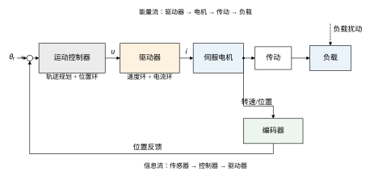
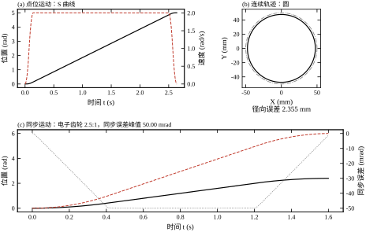
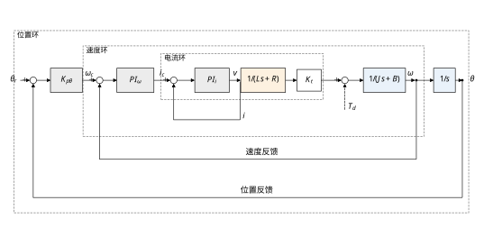
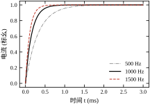
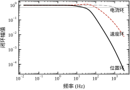
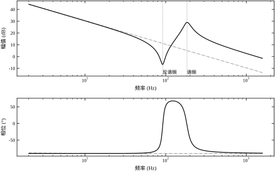
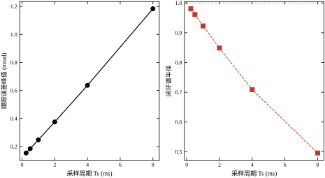
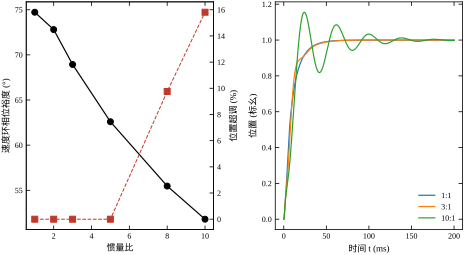
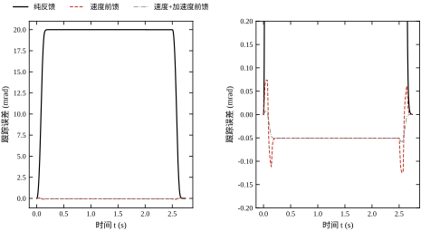
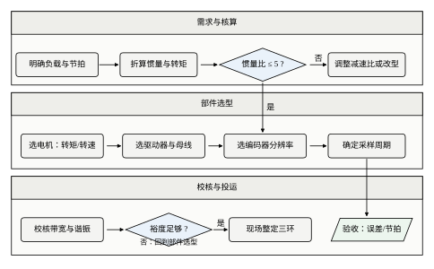

运动控制是控制理论里“最像机器”的那一部分。它关心的不是反应釜温度慢慢爬升，而是一根轴在几十毫秒内从静止加速到每分钟三千转，再在几毫米内停准；不是阀门开度稳定在某个百分比，而是刀具沿一条曲线走出微米级轮廓。对象、指标、失效方式都与过程控制不同，因此需要单独拿出来讲。
设想一条包装线。第一个动作是把料盒从等待位搬到灌装位，行程 5 rad，要求 2.6 s 内到位，到位后不许回弹；第二个动作是灌装头沿一个半径 50 mm 的圆轨迹匀速走一圈，把液体均匀铺开；第三个动作是封口辊与送料辊保持 2.5:1 的转速比，料膜不能被拉长也不能堆积。三个动作分别对应点位控制、连续轨迹控制和同步控制，这也是运动控制最典型的三类任务。
三类任务的指标写法完全不同。点位控制看的是“到没到、超没超、停稳没停稳”，用超调量、上升时间、调节时间描述；连续轨迹看的是“走得准不准、速度匀不匀”，用轮廓误差、速度波动描述；同步控制看的是“两台轴之间的相位差有多大”，用同步误差、相位滞后描述。用同一套阶跃指标去评价三类任务，是现场最常见的误判来源。
三套指标不能互相换算，例子很直白。本章轴的位置阶跃上升时间 0.0182 s，看起来“很快”；但拿它跑 §94.1.3 那个 20 rad/s 的圆，按 21.9 Hz 带宽算，幅值是 1/\sqrt{1+(3.183/21.9)^2}=0.9895，半径仍缩了 0.52 mm。上升时间描述的是“大信号从一个位置跳到另一个位置有多快”，轮廓误差描述的是“小信号在 3 Hz 附近跟得准不准”，两者对应的频段与幅值完全不同。反过来，也不能因为轮廓误差大就断定轴“慢”——它可能只是带宽不够高，而阶跃响应本身很干净。两套指标各自回答一个频段的问题，谁也替代不了谁。
指标还要写成“带窗口”的形式。“到位”不是“误差等于零”，而是“误差进入 \pm\varepsilon 并保持 t_d 不出去”。精度 \varepsilon 与保持时间 t_d 必须同时给出，否则“到位时间”可以被任意缩短——只要把窗口放宽。工程上常取定位精度的 1/2 作为窗口，本章的调节时间按 2% 判据统计。
术语在本章统一如下：控制器发出的目标位置叫指令位置 \theta_r，编码器读回的叫反馈位置 \theta，两者之差 e=\theta_r-\theta 叫跟随误差。编码器装在电机上、负载靠传动链带动的结构叫半闭环；编码器装在负载端的叫全闭环。本章除特别说明，默认半闭环。
本章沿用一台具体的伺服轴作为统一算例。电机转子惯量 1.2\times10^{-4}\ \mathrm{kg\cdot m^2}，负载折算惯量为转子的 3 倍，转矩常数 0.105\ \mathrm{N\cdot m/A}，电枢电阻 0.5\ \Omega、电感 1.2\ \mathrm{mH}，传动轴刚度 120\ \mathrm{N\cdot m/rad}。这些参数在 §94.12 的脚本里都能改，本章所有数字都由该脚本一次跑出。
单位先说清楚，否则后面的数会对不上。本章一律用弧度而不是毫米：转角 \theta、角速度 \omega、角加速度 \alpha 各自独立，避免了“导程、减速比、半径”三套换算反复出现。折算到直线只要乘一个杠杆：丝杠导程 10 mm 时，1 rad 对应 10/2\pi=1.592 mm，于是 1 mrad 对应 1.59 μm，20 mrad 的跟随误差对应 31.8 μm。反过来，若指标写“定位精度 5 μm”，折成角度就是 3.14 mrad，这个数可以直接与 §94.1.3 的 20 mrad 比较——前者是精度要求，后者是纯反馈的固有误差，两者差 6 倍，说明必须上前馈。养成“先把指标折成 rad”的习惯，后面所有公式都不必再带传动比。
图 94-1 给出运动控制系统的组成。与过程控制的单回路相比，它多了两层：控制器与驱动器之间的分工，以及电机、传动、负载之间的机械链路。控制器负责轨迹规划与外环，驱动器负责速度环与电流环，编码器把机械侧的真实位置送回控制器。信息流与能量流方向相反，这是运动控制系统布线、接地与故障排查的基本出发点。

过程控制的对象时间常数通常在秒到小时量级，执行器是阀门，测量是温度、压力、流量，控制周期常取 0.1–1 s。运动控制的对象时间常数在毫秒量级，执行器是电机与功率变换器，测量是位置、速度、电流，电流环周期常取 50–100 μs，位置环 0.5–2 ms。两者相差三到四个数量级。
时间尺度不同带来三个直接后果。第一，运动控制必须考虑机械谐振。轴的刚度有限，电机与负载之间存在一个 100–500 Hz 的谐振点，控制器带宽一旦接近它，相位会骤降。第二，运动控制必须考虑采样与计算延迟。1 ms 的延迟在 20 Hz 的位置环里就是 7.2^\circ 的相位损失，不能忽略。第三，运动控制必须处理强非线性。摩擦力、齿隙、饱和在微米级定位里都不是小量。
两个领域的差别可以并成表 94-1。
| 项目 | 过程控制 | 运动控制 |
|---|---|---|
| 对象时间常数 | 秒到小时 | 毫秒 |
| 执行器 | 阀门、泵、加热器 | 电机与功率变换器 |
| 测量量 | 温度、压力、流量 | 位置、速度、电流 |
| 控制周期 | 0.1–1 s | 50 μs–2 ms |
| 主要扰动 | 负荷波动、环境温度 | 摩擦、齿隙、负载惯量变化 |
| 典型失效 | 超温、超压、产品质量漂移 | 飞车、撞机、谐振啸叫 |
| 核心指标 | 稳态误差、调节时间 | 跟随误差、轮廓误差、同步误差 |
表 94-1 里最容易被低估的是“典型失效”那一行。过程控制失控，后果通常表现为产品不合格，有缓冲时间；运动控制失控，几百毫秒内就是撞机。这个差别决定了运动控制的安全设计必须独立于控制算法：限位、急停、超程保护是硬件职责，不能指望控制器“算得对”。
安全距离可以按运动学估。以最大加速度 a 从速度 v 急停，滑行距离是 v^2/(2a)。本章轴 v=2 rad/s、a=28.3 rad/s²，得 0.0707 rad，折成直线约 0.11 mm；若速度翻倍到 4 rad/s，距离变成 0.283 rad，是原来的四倍。这条平方关系说明：高速轴的限位余量不能按“低速时的经验”放大一点，而要按速度平方放大。更重要的是，电气急停依赖驱动器仍在工作；一旦驱动器失电，只剩机械制动与限位挡块，所以机械限位必须按“电气失效”的工况设计，而不是按正常减速距离设计。
因此，过程控制里“把 PID 整到不振荡”的经验，在运动控制里往往不够用。运动控制的参数不是三个，而是一组相互约束的带宽：电流环、速度环、位置环，再加上前馈、滤波与机械参数。本章的任务，是把这组带宽的分配关系讲清楚。
先看点位运动。按七段 S 曲线规划，行程 5 rad、最大速度 2 rad/s、加加速度 400 rad/s³，峰值加速度为 28.3 rad/s²，总时长 2.64 s。纯位置反馈下，匀速段跟踪误差恰为 v/K_{p\theta}=2/100=20 mrad；速度前馈把它压到 0.1245 mrad，再加速度前馈压到 0.0583 mrad。这三个数字的对比，就是本章后续讨论前馈的起点。
这几个数可以手算核对。加加速度恒定时，速度从 0 升到 2 rad/s 需要 t_1=\sqrt{v/j}=\sqrt{2/400}=0.0707 s，加速度在这一刻恰好达到峰值 jt_1=28.3\ \mathrm{rad/s^2}。这一小段的位移是 jt_1^3/6=0.0236 rad。紧接着加加速度反号、加速度回落，再经 0.0707 s 降为零，此刻速度正好 2 rad/s，位移 0.1178 rad。两段合起来 0.1414 s、0.1414 rad，等于平均速度 1 rad/s 乘时间。
减速段与加速段对称，两端合计 0.2828 rad。剩下 5-0.2828=4.7172 rad 以 2 rad/s 匀速走完，需 2.3586 s。总时长 2.3586+0.2828=2.641 s，与实测 2.64 s 对上。
手算的价值在看参数关系：加加速度越大，t_1 越短，匀速段越长，总时间越接近 d/v；加加速度越小，两端越“软”，总时间越长。j\to\infty 时退化为梯形速度，总时间变成 d/v+v/a。所以“2.6 s 到位”这个指标，实际上约束的是 v 与 j 的组合，不是单约束某一个。
再看连续轨迹。半径 50 mm 的圆，进给角速度 20 rad/s，两轴闭环带宽均为 10 Hz。一阶跟随的幅值衰减使实际半径缩到 47.645 mm，径向误差峰值 2.355 mm。注意这个误差不是“控制器不够快”这么简单：两轴幅值一致时轨迹仍是圆，只是变小；两轴增益不一致时，圆会变成椭圆，误差随角度变化。轮廓误差的成因与控制结构直接相关。
缩小比例可以精确算出。一阶闭环在频率 f 处的幅值是 1/\sqrt{1+(f/f_c)^2}。进给 20 rad/s 对应 3.183 Hz，除以 10 Hz 得 0.3183，代入得 0.9529，半径缩为 50\times0.9529=47.65 mm，误差 50\times(1-0.9529)=2.355 mm。一个式子把带宽、进给速度、轮廓误差三者的关系锁定：误差近似正比于 (f/f_c)^2/2，带宽翻倍，误差降到四分之一。
相位滞后 -\arctan(0.3183)=-17.7^\circ 在两轴相同时不改变半径，只让整条轨迹转了一个角度。这一点很关键：轮廓误差的根源不是“有滞后”，而是“两轴的滞后不一样”。两轴完全相同，轨迹仍是圆只是小一圈；两轴差 10%，圆才被拉成椭圆，误差随角度周期性起伏。
最后看同步。主轴按梯形速度升到 2 rad/s，从轴以 2.5:1 跟随，从轴一阶时间常数 10 ms。匀速段的稳态同步误差为 2.5\times2\times0.01=50 mrad，停车后回落到 -1.1875 mrad。同步误差与速度成正比、与跟随时间常数成正比，降低速度或提高从轴带宽都能减小它，但前者牺牲节拍，后者受谐振限制。
50 mrad 这个数也能拆开看。从轴的参考速度是 2.5\times2=5 rad/s，一阶环节跟踪斜坡的稳态滞后是 \tau 乘以斜率，即 0.010\times5=0.050 rad。一般形式是 \Delta\theta_{sync}=\tau R\omega_m，三个因子各自独立：时间常数、速比、主轴转速。
要减小同步误差，只能动其中一个——降速、减速比、或提高从轴带宽。停车后误差回落到 -1.1875 mrad，是因为主轴速度降到零，斜坡跟踪的稳态滞后消失，只剩一阶环节的指数衰减尾巴。这个小尾巴说明同步误差有两部分：稳态部分随速度走，瞬态部分随加减速走，两者要分别验收。
图 94-3 把三类任务画在同一页上。上左是 S 曲线的位置与速度，上右是圆轮廓的参考与实际，下图是电子齿轮的主从位置与同步误差。三张图的纵轴单位不同，但读法一致：先看参考与实际是否重合，再看误差曲线的形状，最后判断误差是稳态的还是瞬态的。

如果只能记住一句话：运动控制的核心不是把位置误差调到零，而是把电流、速度、位置三个尺度的带宽按十倍左右分开，再用前馈补上“已知的未来”、用反馈兜住“未知的现在”。
本章按“组成—原理—设计—连续—离散—稳定—参数—整定—改进—落地—边界—代码”推进。§94.2 给出电机、传动与三环的数学描述，重点是电流环的零极点对消与双惯量谐振；§94.3 把选型与设计固化成七步流程；§94.4 用连续域算例给出三环带宽与阶跃指标；§94.5 讨论采样、量化与计算延迟；§94.6 用裕度、惯量比与谐振峰值量化稳定边界；§94.7 逐参数扫描，说明每个旋钮的影响方向与量级；§94.8 给出从电流环到位置环的整定顺序；§94.9 讨论前馈、陷波与观测器；§94.10 落到选型、布线、调试与验收；§94.11 说明适用边界；§94.12 给出可复现代码。
不同读者可以走不同路径：做机械与选型的，读 §94.1、§94.3、§94.7、§94.10；做驱动器与算法开发的，读 §94.2、§94.4–§94.6、§94.9；做现场调试的，直接看 §94.8 与 §94.10。三条路径都建议先跑一遍 §94.12 的脚本，本章所有数字都出自它。
误解一：位置环带宽越高越好。 位置环带宽受限于速度环带宽与机械谐振。把位置增益从 100 提到 200，带宽从 21.9 Hz 升到 60.6 Hz，相位裕度从 83.33^\circ 降到 65.16^\circ，超调从 0 升到 2.26%。再往上提，首先撞上的是 184.9 Hz 的谐振，而不是代码里的限幅。
误解二：电流环只是“内环”，可以随便设。 电流环决定了转矩响应速度，也决定了速度环能设计到多快。电流环带宽从 1000 Hz 降到 500 Hz，上升时间从 0.350 ms 变成 0.699 ms，速度环的相位裕度随之下降。更严重的是，电流环若与 PWM 开关频率太接近，采样混叠会让整个环路出现低频振荡。
误解三：前馈可以替代反馈。 前馈只对“模型已知、轨迹已知”的部分有效。负载突变、摩擦变化、齿隙这些未知量，前馈一分钱都补不了。本章算例里，加速度前馈把跟踪误差压到 0.0583 mrad，但 0.05 N·m 的负载阶跃仍会造成 0.8577 mrad 的瞬时挠曲，恢复时间 60.8 ms。前馈与反馈是分工，不是替代。
三个误解指向同一件事：运动控制的性能由“带宽分配、机械特性、扰动抑制”三者共同决定，任何单一参数的极限都不是系统极限。本章后续所有公式与表格，都是为了让这三者的关系变得可计算。如果只想记住一句话，那就是：先问“哪个环先到极限”，再问“这个极限由谁定”；前者决定往哪个方向调，后者决定要不要动机械。
本节把“三环”从口头说法变成可计算的传递函数。顺序是：先写电机与机械的基本方程，再设计电流环，然后把速度环与位置环串起来，最后补上双惯量谐振与前馈。每一步都给出本章算例的具体数值，便于读者对照。
忽略直轴与交轴的差别，把电机等效为一台他励直流电机，电枢回路满足
v(t)=R\,i(t)+L\frac{\mathrm{d}i(t)}{\mathrm{d}t}+K_e\omega(t) \tag{94-1}
其中 v 为电枢电压，i 为电枢电流，R、L 为电枢电阻与电感，K_e 为反电动势常数。机械侧满足
J\frac{\mathrm{d}\omega(t)}{\mathrm{d}t}=K_t i(t)-B\omega(t)-T_d(t) \tag{94-2}
J 为折算到电机轴的总惯量，B 为粘性阻尼，K_t 为转矩常数，T_d 为负载转矩。转角由
\frac{\mathrm{d}\theta(t)}{\mathrm{d}t}=\omega(t) \tag{94-3}
给出。三式合起来是一个三阶系统：电气一阶、机械二阶。电流环把电气的一阶压成快速跟随，速度环再在这个基础上配置机械极点，位置环最后加一个积分器。
K_t 与 K_e 在国际单位制下数值相等，本章都取 0.105。这不是巧合：两者来自同一套磁场与绕组几何，功率守恒要求 K_t i\,\omega=K_e\omega\, i 对任意工作点成立。工程上常见的坑是单位混用——若样本给的是 V/(1000 r/min)，换算成 V·s/rad 要乘 60/(2\pi\times1000)=0.00955，漏乘会让前馈系数差两个数量级，表现为“前馈一加就过冲”。
把式 (94-1) 与式 (94-2) 拉氏变换，得到两个基本传递函数：
\frac{i(s)}{v(s)}=\frac{1}{Ls+R},\qquad \frac{\omega(s)}{i(s)}=\frac{K_t}{Js+B} \tag{94-4}
本章参数下，电气时间常数为 L/R=1.2\times10^{-3}/0.5=2.4 ms，对应 66.3 Hz；机械时间常数为 J/B=4.8\times10^{-4}/2\times10^{-4}=2.4 s。两者相差一千倍，这正是“电流环可以单独设计”的物理依据。若电机电感很大或惯量很小，这个分离不再成立，三环必须联合设计。
要注意 (94-4) 的第二个式子是“电流源驱动”下的结果，前提是电流环已经把电流控住。若直接给电枢加电压、没有电流环，反电动势会形成一条内反馈，传递函数变成 \omega(s)/v(s)=K_t/[(Ls+R)(Js+B)+K_tK_e]。分母常数项从 RB 变成 RB+K_tK_e：本章 RB=10^{-4}，K_tK_e=0.011，后者大一百倍。等效粘性阻尼变成 B_{eq}=B+K_tK_e/R=0.0223，机械极点从 B/J=0.417 rad/s 推到 B_{eq}/J=46.3 rad/s。
这个对比说明一件事：反电动势本身就是很强的阻尼。加了电流环之后，这条阻尼被“藏”进内环——电流环强行维持电流，反电动势不再改变电流，电机对外表现为一个纯转矩源。所以三环设计里用 K_t/(Js+B) 是对的，但那是因为有电流环，不是因为反电动势不存在。一旦电流环退出饱和边界、或者带宽降到几十赫兹，这个近似就失效。
三条微分方程直接对应仿真的状态更新：\dot\theta=\omega，\dot\omega=(K_ti-B\omega-T_d)/J，\dot i=(v-Ri-K_e\omega)/L。§94.12 的时域循环就是按这三行写的。用状态方程而不是传递函数，是因为限幅、摩擦、齿隙这些非线性只能在状态方程里加，传递函数里加不进去。
用直流电机模型描述交流伺服，需要一句交代。永磁同步电机在 i_d=0 控制下，q 轴电流环与直流电机的电枢回路同构：v_q=Ri_q+L_q\,\mathrm{d}i_q/\mathrm{d}t+K_e\omega，转矩 T=1.5p\lambda i_q，其中 p 是极对数、\lambda 是永磁磁链。本章 K_t=0.105 对应 p=4、\lambda=0.0175 Wb，代入 1.5\times4\times0.0175=0.105 正好。所以在“已做 i_d=0 解耦”的前提下，本章全部公式对交流伺服成立。差别在高速段：d、q 轴之间有 \omega L i 的交叉耦合，转速越高耦合越强，靠电流环积分压不住，需要按转速前馈解耦——这与 §94.2.2 末尾那条“反电动势解耦”是同一类做法，只是一个在 d 轴、一个在 q 轴。
电流环采用 PI 控制器：
C_i(s)=K_{pi}+\frac{K_{ii}}{s} \tag{94-5}
与电枢传递函数串联后，开环为
L_i(s)=\frac{K_{pi}s+K_{ii}}{s}\cdot\frac{1}{Ls+R} =\frac{K_{pi}\left(s+K_{ii}/K_{pi}\right)}{s\,L\left(s+R/L\right)} \tag{94-6}
把控制器的零点放在电枢极点处，即令
\frac{K_{ii}}{K_{pi}}=\frac{R}{L} \tag{94-7}
则式 (94-6) 中的一阶因子完全对消，开环退化为
L_i(s)=\frac{K_{pi}}{L\,s} \tag{94-8}
闭环成为一阶系统：
T_i(s)=\frac{L_i(s)}{1+L_i(s)}=\frac{\omega_{ci}}{s+\omega_{ci}}, \qquad \omega_{ci}=\frac{K_{pi}}{L} \tag{94-9}
于是设计公式只有两条：
K_{pi}=L\,\omega_{ci},\qquad K_{ii}=R\,\omega_{ci} \tag{94-10}
本章取 \omega_{ci}=2\pi\times1000\ \mathrm{rad/s}，代入 L=1.2\times10^{-3} H、R=0.5\ \Omega，得 K_{pi}=7.540 V/A、K_{ii}=3141.59 V/(A·s)。实测闭环带宽 1000.7 Hz，上升时间 0.350 ms，超调 0.00%。超调之所以为零，正是因为零点把电枢极点精确抵消，闭环只剩一个实数极点。
这个“零超调”是有条件的。条件一是电感与电阻在工作点附近近似常数；条件二是反电动势在电流环带宽内可以被当作扰动，由积分器抑制；条件三是 PWM 与采样不引入额外相位。实际电机饱和时电感下降，零点位置偏离，超调会重新出现。工程上通常把电流环带宽取在开关频率的 1/10 到 1/20，本章的 1 kHz 对应 10–20 kHz 的开关频率，留有足够余量。
零极点对消对参数误差其实不敏感，这一点常被低估。设电感实际比铭牌大 43%（1.71 mH），控制器零点仍在 R/L_{nom}=416.7 rad/s，对象极点却移到 R/L=292.4 rad/s。穿越频率变成 K_{pi}/L=7.540/1.71\times10^{-3}=4400 rad/s 即 700 Hz，在该频率上零点与极点各自贡献的相位是 \arctan(4400/416.7)=84.6^\circ 与 \arctan(4400/292.4)=86.2^\circ，未抵消的残差只有 1.6^\circ。原因是零点与极点都远在穿越频率之下，比值一大，两个 \arctan 都趋近 90^\circ，差值自然很小。所以“电感铭牌不准”不会让电流环失稳，只会让实际带宽偏离设计值——真正需要担心的是带宽偏离后，速度环看到的内环特性变了。
电流环用 PI 而不用 PID，理由很直接：电枢是一阶对象，PI 的零点已经能把它的极点对消，再加微分只会放大电流采样噪声。电流采样发生在 PWM 开关瞬间，噪声幅值常常是额定电流的百分之几，微分会把它放大到占空比饱和，表现为随机丢波。若确实需要更快的电流响应，正确做法是提高开关频率、从而提高可用带宽，而不是加微分。
还有一条工程上的“隐形修正”：反电动势解耦。电流环带宽 1 kHz 时，1000 rad/s 的转速对应 105 V 反电动势，这个量在电流环看来是扰动，积分器要花时间才能压住。高性能驱动器会把 K_e\omega 作为前馈直接加到电压指令上，让电流环只处理真正的误差。这一步不改变传递函数，但能显著改善高速段的电流跟踪。
速度环仍用 PI：
C_\omega(s)=K_{p\omega}\left(1+\frac{1}{T_{i\omega}s}\right) \tag{94-11}
速度开环为
L_\omega(s)=C_\omega(s)\,T_i(s)\,\frac{K_t}{Js+B} \tag{94-12}
速度闭环为 T_\omega=L_\omega/(1+L_\omega)。位置环采用纯比例：
L_\theta(s)=K_{p\theta}\,\frac{T_\omega(s)}{s} \tag{94-13}
位置闭环为 T_\theta=L_\theta/(1+L_\theta)。本章取 K_{p\omega}=2.2 A·s/rad、T_{i\omega}=0.008 s、K_{p\theta}=100 s^{-1}，得到速度环带宽 103.2 Hz、相位裕度 71.37^\circ，位置环带宽 21.9 Hz、相位裕度 83.33^\circ、增益裕度 33.21 dB。
三个带宽的比值是 1000.7:103.2:21.9\approx45.7:4.7:1。相邻两环相差约 5–10 倍，这是级联控制的基本要求：内环必须比外环快得多，外环设计时才能把内环近似为 1。若速度环只比位置环快 2 倍，位置环的相位裕度会被内环的相位滞后吃掉，阶跃响应出现明显超调。
三个裕度里有两个是“无穷大”，值得解释。电流环开环是 \omega_{ci}/s，相位恒为 -90^\circ，永远到不了 -180^\circ，所以增益裕度无穷；速度环的相位随频率单调趋近 -180^\circ 却始终不相交，等它足够接近时幅值已经衰减到极小，同样没有有限频率的穿越点。只有位置环因为外面又套了一个积分器，相位最终会过 -180^\circ，实测增益裕度 33.21 dB，即增益可以乘 10^{33.21/20}=45.8 倍才失稳。这个 45.8 倍听起来很大，但它是在“纯刚体、无延迟”的模型上算的；把 183.8 Hz 的谐振接进来，-180^\circ 处的幅值被抬高，45.8 倍会掉到个位数。
反过来说，裕度也不是越大越好。位置环 83.33^\circ 的相位裕度对应几乎无超调，同时也对应“偏慢”：一阶近似的调节时间 3.9/\omega_c 已经是最优，再大就只是把带宽换成了阻尼。工程上把 45^\circ–60^\circ 视为“有超调但快”、60^\circ–80^\circ 视为“折中”、80^\circ 以上视为“保守”。本章取在保守区，是因为后续还要叠加前馈、陷波与采样延迟，先把余量留出来。
这个“5–10 倍”不是审美要求，是相位预算。外环的相位裕度等于 90^\circ 减去内环在穿越频率处的滞后，再减去采样与延迟的损失。若把内环近似为一阶，滞后是 \arctan(\omega_{cp}/\omega_{cv})：比值 10 倍对应 5.7^\circ，5 倍对应 11.3^\circ，2 倍对应 26.6^\circ。本章比值 4.7 倍，按此估算应有 12^\circ 的滞后，实测只有 6.67^\circ——估算偏保守，因为速度闭环在 20 Hz 附近并不是纯一阶。这个偏差方向值得记住：一阶近似估相位，通常估得比实际更悲观，所以按它留余量是安全的。
纯比例位置环对匀速输入的稳态误差可以直接写出。匀速段 \dot\theta_r=v，积分器输出为 v/s^2，位置环的直流增益为 K_{p\theta}，故
e_{ss}=\frac{v}{K_{p\theta}}=\frac{2}{100}=20\ \mathrm{mrad} \tag{94-14}
这个式子说明：位置环的刚度由 K_{p\theta} 决定，想减小匀速跟踪误差，要么提高增益，要么加前馈。提高增益会撞上谐振与相位裕度，前馈则不受这个限制——这是 §94.9 展开前馈的直接原因。
既然纯 P 有 20 mrad 的稳态误差，为什么不用 PI？三个理由。
第一，位置环的积分与速度环的积分重复。速度环已经是 I 型，对恒转矩扰动无稳态误差；位置环再加积分，等于在已经很硬的系统上再叠一层积分，低频段多掉 90^\circ 相位，超调与慢振荡随之而来。
第二，位置环的积分会与机械谐振耦合。积分器在低频增益很高，一旦扰动把轴推离目标，积分持续加力，力一大就激发谐振，表现为“低频摆动叠着高频啸叫”——这种波形在现场很典型，也很难调。
第三，匀速误差有更好的解法。加积分只是把误差“慢慢磨掉”，前馈是“一开始就不产生误差”。前者拿稳定性换精度，后者只要轨迹已知就不付代价。
所以工业伺服的标准配置是“速度环 PI + 位置环 P”。少数场合会用位置环 I，典型是垂直重力轴：恒定重力矩必须靠积分才能消掉，此时要同时加重力前馈，让积分只负责残差，否则每次上下运动都会先沉一下再爬回来。
设计一台伺服轴，从来不是“先写控制器、再想对象”。指标在机械侧定，约束也在机械侧出，控制器只是把已经定好的余量兑现出来。本节把这件事固化成七步，每一步都有明确的输出物和判据；七步走完，三环参数只剩查表代入。
给三个指标就够了：到位时间、定位精度、负载质量与外形。要算的第一个量是加速度。
点位运动的行程 d、最大速度 v、加加速度 j 一旦确定，峰值加速度就定了。本章的 5 rad、2 rad/s、400 rad/s³ 给出 a_{pk}=28.3\ \mathrm{rad/s^2}。如果指标只写“2.6 s 内走完 5 rad”，那就有无穷多组 (v,j) 满足，选哪一组取决于电机能力与机械允许的冲击：j 取大，节拍短但冲击大；j 取小，冲击小但匀速段被压缩。
峰值转矩由惯量与加速度决定：
T_{pk}=J_{tot}\,\alpha_{pk}+B\,\omega_{pk}+T_{f} \tag{94-15}
本章 J_{tot}=J_M(1+3)=4.8\times10^{-4}\ \mathrm{kg\cdot m^2}，\alpha_{pk}=28.3\ \mathrm{rad/s^2}，B=2\times10^{-4}，暂忽略摩擦，得 T_{pk}=0.0136+0.0004=0.0140\ \mathrm{N\cdot m}，折成电流 0.0140/0.105=0.134 A。
这个数字小得让人意外，但它是对的：小惯量轴配小转矩电机，转矩与惯量同比例缩放。真正卡住选型的往往不是稳态转矩，而是另外三件事——惯量比、谐振频率、驱动器能提供的电流带宽。所以第二步、第四步不能跳。
峰值转矩只回答“能不能加速”，连续转矩回答“会不会过热”。按本章的 S 曲线循环，加速段 0.1414 s 用 0.0138 N·m，匀速段 2.3586 s 只用 0.0004 N·m，减速段 0.1414 s 用 0.0136 N·m。按 T_{rms}=\sqrt{\sum T_k^2t_k/\sum t_k} 算，得 \sqrt{(0.0138^2\times0.1414\times2+0.0004^2\times2.3586)/2.6414}=0.0045\ \mathrm{N\cdot m}。
峰值 0.0140、均方根 0.0045，相差 3.1 倍。电机选型时连续转矩只要大于 0.0045（再留 2 倍），峰值转矩大于 0.0140 即可。很多选型失败就失败在只看峰值：电机峰值够、连续转矩不够，跑几十个循环就过热报警。
第一步，写清任务与指标。 输出一张表：行程、节拍、定位精度、重复精度、负载质量与外形、允许的冲击与噪声。指标必须可测。“走得稳”不是指标，“轮廓误差小于 0.05 mm、无爬行”才是。
第二步，折算负载惯量与惯量比。 丝杠、同步带、减速器各有折算公式，统一折到电机轴。得到 J_L 后算
R_J=\frac{J_L}{J_M} \tag{94-16}
判据是 R_J\lesssim5。本章取 3，相位裕度 68.94^\circ；取到 10 时降到 51.80^\circ，超调从 0 升到 15.53%，调节时间从 0.0425 s 涨到 0.1203 s。惯量比大不一定不能跑，但位置环带宽必须下调，节拍随之变差。这也解释了为什么工程师宁愿加一根更粗的轴、也不愿换一台大三倍的电机：惯量比是“匹配”问题，不是“功率”问题。
折算有三条常用公式。丝杠传动，负载质量 m、导程 h，折算到电机轴为 J_L=m(h/2\pi)^2，再加丝杠自身惯量；同步带传动，带轮半径 r，为 J_L=mr^2；经减速比 i 的减速器，为 J_L'=J_L/i^2。惯量按平方缩小，这是减速器最容易被忽略的好处——速比 10 的减速器把惯量比降到 1/100，代价是转速降到 1/10、并引入齿隙。
一台 5 mm 导程丝杠带 20 kg 负载，折算惯量只有 20\times(0.005/2\pi)^2=1.27\times10^{-5}，加上丝杠自身约 1\times10^{-5}，合计 2.3\times10^{-5}，仅是本章电机惯量的 0.19 倍。惯量比小于 1 并不意味着“更好调”：此时电机惯量占主导，同样的负载转矩打在更小的总惯量上，速度波动反而更大；反谐振虽然很高，扰动刚度却变差。惯量比的目标是“匹配”，不是“越小越好”。
第三步，选电机与驱动器。 电机看连续转矩、峰值转矩、最高转速、转矩常数与反电动势常数是否匹配；驱动器看连续电流、峰值电流、母线电压、开关频率。校核两条：峰值转矩留 2–3 倍余量，最高转速不超过额定转速的 80%。
本章把电流限幅设为 12 A，远大于上面算出的 0.134 A，这是为了让 §94.4–§94.6 的线性结论不被饱和污染。真实选型按 2–3 倍留量即可，留 90 倍只是浪费铜和钱。读者读后续章节的阶跃曲线时请记住这一点：那些“干净”的超调量，是在限幅从未触发的条件下得到的。
一个更省事的做法是把速度也核一遍。本章轴的最高速度 2 rad/s 折合 19 r/min，属于典型的“低速大转矩”定位轴，转速远不是约束，转矩与刚度才是。这类轴选电机时容易犯的错是拿“额定功率”去配：功率是转矩乘转速，低速轴上功率很小，但转矩需求并不小，按功率选必然选小。
热校核也要看时间尺度，不能只比 T_{rms}。电机的发热时间常数通常在几分钟量级，而一个节拍只有 2.6 s，所以连续跑几十个节拍时，绕组温度按“整段时间的平均损耗”上升，T_{rms} 才是有效值；反过来，单次动作里的 0.0140 N·m 峰值只持续 0.14 s，绕组来不及升温，靠的是铜的热容。这解释了为什么样本上同时给“连续转矩”和“峰值转矩，持续 3 s”——后者不是热平衡值，而是短时过载能力。选型时把 T_{rms} 与连续转矩比、把 T_{pk} 与“峰值转矩”比，两个都比得过才算过。
第四步，核查机械链路。 传动刚度与阻尼决定谐振。双惯量模型的两个特征频率是
\omega_{ar}=\sqrt{\frac{K_s}{J_L}},\qquad \omega_{r}=\sqrt{K_s\left(\frac{1}{J_M}+\frac{1}{J_L}\right)} \tag{94-17}
本章 K_s=120\ \mathrm{N\cdot m/rad}，得 \omega_{ar}=577\ \mathrm{rad/s}（91.9 Hz）、\omega_r=1155\ \mathrm{rad/s}（183.8 Hz）。判据是：位置环带宽不超过反谐振频率的 1/3，速度环不超过 1/2。21.9 Hz 对 91.9 Hz，余量 4.2 倍，合格。
若刚度只有 12\ \mathrm{N\cdot m/rad} 而其余不变，反谐振掉到 29 Hz，位置环就必须压到 10 Hz 以下，节拍直接翻倍。这就是“机械决定上限”的具体含义：控制器能让系统变好，但改不了机械定下的天花板。
第五步，定编码器与采样周期。 编码器分辨率要优于定位精度的 1/5。本章取 10\ \mu\mathrm{rad}，相当于 5 rad 行程的 1/500000，对微米级定位足够。换成“位”来算：单圈 2^{19}=524288 份，每份 2\pi/2^{19}=12.0\ \mu\mathrm{rad}；20 位是 6.0\ \mu\mathrm{rad}。所以 10 μrad 介于 19 位与 20 位之间，是常见的中高端配置。采样周期按“每环至少 10 倍带宽”取：电流环 1 kHz 要求 10 kHz 以上的更新率，只能放进 PWM 中断；位置环 21.9 Hz 用 1 ms 绰绰有余，本章在 §94.5 里扫 0.25–8 ms。
编码器的接口类型也要在这一步定。增量式 A/B 差分输出受脉冲频率限制：20 位编码器转 3000 r/min 时，脉冲率是 2^{20}\times3000/60=52.4 MHz，远超差分线能传的几 MHz，只能改串行协议（BiSS、EnDat）或降低分辨率。本章轴只有 19 r/min，20 位对应 332 kHz，增量式完全够用；但同一台驱动器如果以后要配高速轴，就必须选串行接口。分辨率、接口、最高转速三者是一组，不能分开选。
第六步，分配带宽并算参数。 三环带宽按 5–10 倍分开：电流环 1000 Hz、速度环 103 Hz、位置环 21.9 Hz，比值 45.7:4.7:1。图 94-2 把三个环画在同一张图上，三个虚线框标出每个环闭合的位置——电流环闭合在驱动器内部，速度环跨驱动器与电机，位置环跨控制器与编码器。

带宽分配的本质，就是决定这三个框各自包住多少相位滞后。框画得越往外，包含的滞后越多，能给的增益就越低。所以设计顺序必然是自内向外：先定电流环，再定速度环，最后定位置环。反过来做，位置环的增益会被内环的未知滞后反复推翻。
参数由带宽直接算：电流环用 (94-10) 的零极点对消，得 K_{pi}=7.540、K_{ii}=3141.59；速度环用 PI 把穿越频率放在 103 Hz 附近，得 K_{p\omega}=2.2、T_{i\omega}=0.008 s；位置环用 K_{p\theta} 直接给低频刚度。注意 K_{p\theta}=100\ \mathrm{s^{-1}} 并不等于 2\pi\times21.9=137.6\ \mathrm{rad/s}。位置环的穿越频率由 K_{p\theta} 与速度闭环的高频段共同决定，不能只用一个除法估；K_{p\theta} 给的是“每弧度误差出多少速度指令”这个刚度，穿越点要靠频率响应读出来。
第七步，加前馈、滤波与保护。 速度前馈 K_{vf}、加速度前馈 K_{af}、陷波滤波器、电流与速度限幅、超程与过热保护。前馈系数先按 1 取，再用跟踪误差微调；陷波按反谐振频率设，深度不宜超过 20 dB，否则相位损失会把刚挣来的裕度又吃回去。本章的 0.0583 mrad 就是这一步的成果，对应 §94.9。
三个前馈系数的量纲要分清。K_{vf} 是无量纲的比例，理论上等于 1，因为位置环输出的速度指令已经与参考速度同量纲；K_{af} 有量纲，单位是 A·s²/rad，数值等于 J/K_t，本章 4.8\times10^{-4}/0.105=4.57\times10^{-3}；如果驱动器内部按“转矩前馈”接口，则直接给 J，由驱动器自己乘 1/K_t。量纲错了，前馈要么毫无作用，要么直接把电流打到限幅。
流程写得再顺，实际设计也会回头三次。
第一次在第三步：电机选完发现惯量比超过 5，要么换大一号电机，要么加减速器。第二次在第四步：谐振频率不到位置环带宽的 3 倍，要么加粗传动、提高刚度，要么老老实实降带宽。第三次在第七步：陷波一加，相位裕度掉了十几度，只能减小深度或回去降带宽。
这三次回头解释了现场一个常见困惑——参数怎么调都不对。多数时候不是参数没调好，而是机械与选型已经把上限锁死了，控制器只能在锁死的空间里做分配。按七步顺序走一遍，能在花钱之前就发现这些锁在哪。
把判据代进一个假定算例，能看清杠杆在哪。设某台轴负载折算惯量比为 12:1，位置增益按默认值取，按表 94-5 的规律它会落在 50^\circ 附近，定位必然带 10% 量级的过冲。两种改法：把 K_{p\theta} 降三成，过冲压到 3%，代价是节拍变长；或者换 1:2 的减速比，惯量比降到 3:1，K_{p\theta} 反而可以提上去，过冲与节拍同时改善。前者是第三步的钱（换电机），后者是第四步的钱（换减速器），后者通常便宜得多。这正是“回头要在对的步骤回头”的意思。
系数要算准。惯量按速比平方折算，1:2 的减速器把负载惯量降到 1/4，12:1 变成 3:1；如果误以为“速比 2 就是惯量减半”，会算成 6:1，选型仍然偏大。同时要知道减速器自己也有惯量，通常折算后相当于电机惯量的 0.1–0.3 倍；速比越大，这部分占比越高，所谓“降到 3:1”是含减速器之后的净值，不是单算负载。
把七步的判据集中成表 94-2。这张表可以直接当评审清单用：任何一项打了问号，后面的参数都不必算。
| 步骤 | 输出物 | 判据 | 越界的后果 |
|---|---|---|---|
| 1 任务与指标 | 行程、节拍、精度表 | 指标可测、有测试方法 | 验收时扯皮 |
| 2 负载折算 | J_L、R_J | R_J\lesssim5 | 位置环降带宽、超调增大 |
| 3 电机与驱动器 | 转矩、电流、转速校核 | 峰值转矩 2–3 倍余量 | 加速段饱和、到位慢 |
| 4 机械链路 | K_s、\omega_{ar}、\omega_r | f_{cp}\le\omega_{ar}/3 | 谐振激发、啸叫、失稳 |
| 5 编码器与采样 | 分辨率、T_s | 分辨率优于精度 1/5 | 极限环、爬行 |
| 6 带宽与参数 | 三环增益、带宽比 | 相邻环差 5–10 倍 | 外环相位被吃、超调 |
| 7 前馈与保护 | K_{vf}、K_{af}、陷波 | 裕度下降不超过 10° | 快而不稳 |
表 94-2 的判据都是“不等号”，不是“等于号”。设计不是解方程求唯一解，而是在一组不等式围出的可行域里挑一个点。挑点的依据是节拍与成本的权衡，这部分内容 §94.7 会用参数扫描给出定量的方向，§94.8 给出具体的调试顺序。
这张表的用法是按行往下问，不是按列横向比。第一行打问号，说明需求本身没定义清楚，后面六行的计算都失去意义——一个连“精度是定位精度还是重复精度”都没定的项目，编码器选 19 位还是 23 位都只是猜。第二、四行是一对：负载折算与传动刚度共同决定反谐振，前者估错一倍、后者估错一倍，反谐振就差两倍，而这两项恰恰是选型阶段最容易被“先估个数”的两项。第三行与第五行是一对：转矩余量不足表现为加速段饱和，分辨率不足表现为低速爬行，两者都在时域里看得见，却常被误诊成“参数没调好”。第六、七行才是本章后面几节要算的内容，它们排在最外面，正因为前面五行是它们的前提。
先在连续域把三环算清楚。连续域里没有采样、没有计算延迟、没有量化，可以看清每个环“本来”能跑多快。离散带来的损失留到 §94.5 单独扣，两边的差额就是数字实现付出的代价。
按 (94-10) 取三组带宽，得到表 94-3 的增益与上升时间。
| 电流环带宽 | K_{pi} (V/A) | K_{ii} (V/(A·s)) | 上升时间 (ms) |
|---|---|---|---|
| 500 Hz | 3.770 | 1570.80 | 0.699 |
| 1000 Hz | 7.540 | 3141.59 | 0.350 |
| 1500 Hz | 11.310 | 4712.39 | 0.233 |
带宽与上升时间的乘积是常数：500\times0.699\approx1000\times0.350\approx1500\times0.233\approx350。这个 350 不是巧合，一阶系统的 10%–90% 上升时间约为 2.2/\omega_c，折成赫兹就是 2.2/(2\pi)=0.350 个周期。表 94-3 的三行其实是同一个系统在三个时间尺度上的重演。
同一件事还可以从时间常数看。一阶系统 1/(1+s/\omega_c) 的时间常数是 1/\omega_c，1000 Hz 对应 0.159 ms：阶跃后 0.159 ms 到达 63.2%，0.318 ms 到达 86.5%，0.477 ms 到达 95.0%。表 94-3 里 0.350 ms 的 10%–90% 上升时间落在 0.318 与 0.477 之间，与这条指数曲线一致。工程上读电流环波形，常用的是“指令跳变到电流到位”这段，它约等于三个时间常数，即 0.48 ms；如果实测明显长于这个数，先查滤波，再查 PWM 更新时刻，最后才怀疑增益。
三组带宽对应三种硬件条件，不能随意选。500 Hz 适合大电感、低母线电压或开关频率只有 8 kHz 的场合，此时每周期有 16 个采样点，电流纹波小、噪声裕度大；1000 Hz 是 10–16 kHz 开关频率下的常规折中；1500 Hz 要求开关频率不低于 15 kHz，且电流采样必须与 PWM 中心对齐，否则采样点落在纹波斜坡上，反馈里会混进与占空比同频的干扰。带宽不是越高越好，它首先是一个与功率级绑定的数字。
图 94-5 是这三组的闭环阶跃。三条曲线都单调上升、没有超调，只有快慢之别。零超调的来源在 §94.2 已经交代过：PI 零点精确抵消电枢极点，闭环只剩一个实数极点，一阶系统不可能超调。

把这件事换个说法：开环 L_i(s)=K_{pi}(s+K_{ii}/K_{pi})/[s(Ls+R)]，零点在 -R/L=-416.7 rad/s，极点也在 -416.7 rad/s，两者相消后只剩 K_{pi}/(Ls)=\omega_{ci}/s。开环幅频是一条斜率 -20 dB/dec 的直线，在 \omega_{ci} 处穿过 0 dB；相位恒为 -90^\circ，所以相位裕度正好 90.00^\circ。
90° 的相位裕度听起来很美，代价是阻尼过大。同样带宽下，一阶系统比二阶系统慢：二阶系统在 \zeta=0.707 时穿越频率与带宽之比约为 1.55，而一阶系统这个比值只有 1。想让电流环更快，只能提高带宽，而带宽又被开关频率与采样卡住——这条因果链在 §94.5 会再出现一次。
速度环看到的对象是“电流闭环串上机械”。在 103 Hz 以内，T_i 的幅值接近 1、相位只掉了 -\arctan(103.2/1000)=-5.9^\circ，可以近似成 1；机械部分 \frac{K_t}{Js+B} 的极点 B/J=0.417 rad/s 在低频，也可忽略。于是速度开环近似为
L_\omega(s)\approx \frac{K_{p\omega}K_t}{Js}\left(1+\frac{1}{T_{i\omega}s}\right) \tag{94-18}
这是一个带 PI 零点的积分器。穿越频率 103.2 Hz、相位裕度 71.37^\circ。为什么不是 90°？两处滞后：T_i 贡献的 5.9^\circ，以及穿越点附近 (Js+B) 尚未完全变成纯积分所剩下的几度。两者相加约 19^\circ，正好对上 90-71.37。
这个账可以逐项算。PI 在 103.2 Hz 处的相位是 -90^\circ+\arctan(\omega T_{i\omega})，其中 \omega T_{i\omega}=2\pi\times103.2\times0.008=5.19，\arctan 5.19=79.1^\circ，所以 PI 贡献 -10.9^\circ；机械环节 \frac{K_t}{Js+B} 在 103.2 Hz 处的相位是 -90^\circ+\arctan(0.417/648.5)\approx-90^\circ，但它比纯积分少掉的幅值要单独算；电流闭环再贡献 -5.9^\circ。三项相加 -106.8^\circ，相位裕度 73.2^\circ，与实测 71.37^\circ 差 1.8^\circ，差额来自 (Js+B) 中阻尼项带来的额外相位与幅值修正。手算到这里就够了：它说明裕度的八成来自 PI 零点位置，剩下的才是内环与机械的零碎。
由此可以推出一条调参直觉：PI 零点越靠近穿越频率，\arctan 越接近 90^\circ，PI 的相位贡献越接近 0^\circ，相位裕度越高、但积分作用越弱；零点越往低频挪，\arctan 变小，PI 相位越接近 -90^\circ，裕度被吃掉。把零点放在穿越频率的 1/5，\omega T_i\approx5，\arctan 5\approx78.7^\circ，PI 只吃掉约 11^\circ；放在 1/10 则 \omega T_i\approx10，只吃掉 5.7^\circ，但积分增益降了一半，扰动恢复变慢。本章取 1/5，零点在 125 rad/s 即 19.9 Hz，是在“留 11° 余量”和“扰动恢复不太慢”之间选的；1/5 到 1/10 是常规区间。
速度环是 I 型系统，对恒转矩扰动没有稳态误差。这一点在 §94.6 用 0.05 N·m 的负载阶跃验证：末值回到 0，但中间有 0.8577 mrad 的挠曲，恢复用了 60.8 ms。
这里有一个容易看漏的细节：速度环闭环带宽 103.2 Hz，开环剪切频率却只有 78.8 Hz，两者差 24 Hz。正常情况下这两个数应当接近；差出来的部分，正是 §94.7.4 那个 1.17 倍隆起的贡献——闭环幅频在 29 Hz 附近先鼓起来，-3 dB 点被推到了比剪切频率更高的位置。所以“带宽”与“剪切”不一致，本身就是“闭环不平直”的旁证。读驱动器手册时，若只给一个“速度环带宽”，要问清它指的是闭环 -3 dB 还是开环穿越，两者可以差 25%。
位置环是纯比例，带宽 21.9 Hz、相位裕度 83.33^\circ、增益裕度 33.21 dB。单位阶跃的超调 0.00%、上升时间 0.0182 s、调节时间 0.0425 s。
零超调同样可以用“近似成一阶”解释。位置环穿越频率 21.9 Hz 只有速度环带宽的 1/4.7，在穿越点上速度闭环的幅值仍接近 1、相位只掉了几度，于是
L_\theta(s)=K_{p\theta}\frac{T_\omega(s)}{s}\approx\frac{K_{p\theta}}{s} \tag{94-19}
又是积分器，又是一阶闭环，又不超调。实测 83.33^\circ 而非 90°，差的 6.67^\circ 就是速度环在 21.9 Hz 处的残余滞后。这个数字很关键：它说明“外环可以把内环当 1”是一个近似，近似的误差会直接吃掉外环的相位裕度。
把 K_{p\theta} 从 50 扫到 200，得到表 94-4。
| K_{p\theta} (s⁻¹) | 位置带宽 (Hz) | 相位裕度 (°) | 匀速误差 (mrad) |
|---|---|---|---|
| 50 | 8.4 | 89.05 | 40.000 |
| 100 | 21.9 | 83.33 | 20.000 |
| 150 | 44.0 | 73.89 | 13.333 |
| 200 | 60.6 | 65.16 | 10.000 |
匀速误差那一列严格服从 (94-14)：2/50=40、2/100=20、2/150=13.33、2/200=10，一位不差。增益每翻一倍，误差减半，这是纯比例位置环的硬约束，没有例外。
带宽那一列却不成正比：增益翻 4 倍（50→200），带宽涨了 7.2 倍（8.4→60.6）。原因是穿越点由两个因素共同决定：K_{p\theta} 抬高整条开环幅频曲线，而速度闭环在 20–60 Hz 之间的幅值并不平直，越往高处抬，穿越点越容易落在幅值隆起的位置上，于是带宽涨得比增益快。这也提醒一件事：不能用一个系数把“增益”换算成“带宽”，必须读频率响应。
相位裕度那一列下降得比带宽上升更快：从 89.05^\circ 一路掉到 65.16^\circ。掉的全是速度环在更高频率处的滞后。当 K_{p\theta}=200 时，穿越点 60.6 Hz 已经接近速度环带宽 103 Hz 的一半，“内环当 1”的近似开始失效，超调也随之出现（2.26%）。再往上加，撞的就不是速度环，而是 91.9 Hz 的反谐振。
阶跃指标也可以拿来交叉验算。若位置闭环真是一阶、带宽 21.9 Hz，则 10%–90% 上升时间应为 0.350/21.9=0.0160 s，2% 调节时间应为 3.9/(2\pi\times21.9)=0.0283 s。实测分别是 0.0182 s 与 0.0425 s，前者只多 14%，后者多 50%。上升时间接近，说明穿越点附近的幅频确实像积分器；调节时间偏长，说明尾巴上还有速度环的慢极点没有衰减完。一阶近似只在穿越点附近成立，到了“误差只剩 2%”的尾巴上，起作用的已经是速度环 103 Hz 之外的那些小时间常数。
这条偏差本身就是一个诊断量。把 \text{上升时间}\times\text{带宽} 算出来，理想一阶应得 0.350；如果实测明显大于这个数（比如 0.5 以上），说明外环并没有把内环当成 1，要么内环带宽不够，要么中间夹了滤波或通信延迟。它比单看带宽可靠，因为带宽只描述频域的一个点，而上升时间把整个过渡过程都压进了一个数。
图 94-6 把三个闭环的幅频画在一起，横轴是频率，纵轴是闭环幅值，虚线是 -3 dB。每条曲线与虚线交点就是该环的带宽：1000 Hz、103 Hz、21.9 Hz。

这张图值得看三处。
第一处是三条曲线在高频段的衰减速度。电流环以 -20 dB/dec 下降，速度环在 100 Hz 之后以 -40 dB/dec 下降，位置环再往外是 -60 dB/dec。每闭合一个环，高频衰减就快一档。外环之所以“稳”，很大程度上是因为它自带更强的低通。
第二处是三条曲线的间距。相邻两条在 -3 dB 线上的水平距离，就是带宽比：电流环与速度环差 9.7 倍，速度环与位置环差 4.7 倍。前者宽裕，后者刚好卡在下限。但间距不能单独看，还要看曲线本身是否平直。把 K_{p\omega} 从 2.2 降到 1.0，位置带宽“升”到 35.90 Hz，可相位裕度同时从 83.33^\circ 掉到 65.90^\circ——闭环幅频在 25 Hz 处从 0.88 又顶回 0.95，-3 dB 点是这个鼓包顶出去的，不是系统真的更快。反过来把 K_{p\omega} 提到 5.0，位置带宽回落到 17.53 Hz，相位裕度升到 87.65^\circ，幅频单调下降。带宽数字与稳定程度在这里是反着走的，这是第四章“带宽不等于性能”在运动控制里的具体形态。
第三处是 30 Hz 附近速度环的隆起。实测 |T_\omega| 在 30 Hz 处达到 1.17，来源是 PI 零点（19.9 Hz）与机械极点的配合。这个隆起让位置闭环在 25 Hz 附近也有一个 0.95 的小鼓包，于是位置带宽能到 21.9 Hz，而不是 K_{p\theta}/(2\pi)=15.9 Hz。K_{p\theta} 除以 2\pi 这个估法之所以不准，根子就在这里：它默认速度闭环是平的，而实际不是。隆起本身不是坏事，它换来了更快的扰动恢复；但它会吃掉外环的相位，所以位置环增益不能按“速度环带宽的一半”去猜，必须读频率响应。
隆起在现场也能测出来，不必有频响仪。给速度环一个方波指令，看速度反馈的上升沿：如果沿上有一段“先冲过头再回落”，那就是隆起在时域的形态；冲过头的比例约等于频域峰值减一，本章 17% 的超调对应 1.17 的峰值。另一个办法是给位置环一个很小的正弦指令，从 5 Hz 扫到 50 Hz，记录幅值比，峰值出现在哪里，隆起就在哪里。两种办法都只需要一台能录波的驱动器，比买频响分析仪便宜得多。
前面所有计算都用了刚体模型 J_{tot}=4.8\times10^{-4}。真实轴不是刚体：电机通过一根有限刚度的轴带动负载，两者之间有相对扭转。把传动轴建成弹簧加阻尼，得到
G_{flex}(s)=\frac{J_Ls^2+cs+K_s} {J_MJ_Ls^3+c(J_M+J_L)s^2+K_s(J_M+J_L)s} \tag{94-20}
分子是一个二阶环节，它的零点就是反谐振频率；分母的二次因子给出谐振频率，正是 (94-17) 那两个式子。本章参数下，反谐振 91.9 Hz、谐振 183.8 Hz。
这两个数可以手算。负载折算惯量 J_L=3J_M=3.6\times10^{-4}，反谐振 \omega_{ar}=\sqrt{K_s/J_L}=\sqrt{120/3.6\times10^{-4}}=577.4 rad/s，即 91.9 Hz；谐振 \omega_r=\sqrt{K_s(1/J_M+1/J_L)}=\sqrt{120\times(8333+2778)}=1154.7 rad/s，即 183.8 Hz。两者之比 \omega_r/\omega_{ar}=\sqrt{1+J_L/J_M}=\sqrt{4}=2。这个比值只由惯量比决定，与轴刚度无关——刚度同时抬高或压低两个频率，却改不了它们的间距。所以“换一根更硬的轴”只能把共振推到更高处，不能让反谐振与谐振靠得更近。
把这条比值用到惯量比 1 与 10 上，立刻能预测各自的共振位置。惯量比 1 时 \sqrt{2}=1.414，反谐振 159.2 Hz、谐振 225.1 Hz（图 94-4 标注 577 与 1155 rad/s 是对应的本章 3:1 算例）；惯量比 10 时 \sqrt{11}=3.32，反谐振 50.3 Hz、谐振 166.9 Hz（实测峰位 167.2 Hz，差异来自阻尼）。惯量比从 1 涨到 10，谐振频率只从 225 Hz 降到 167 Hz，反谐振却从 159 Hz 掉到 50 Hz——这就是 §94.6 那条“惯量比越大越难控”的频域根源：谐振峰没走多远，可用的一段平坦区却被压窄了近三倍。
图 94-4 把刚体模型（灰）与双惯量模型（黑）画在一起。低频段两者完全重合——这是必然的，因为两者的总惯量相同，s\to0 时都趋于 1/(J_{tot}s)。90 Hz 附近黑线出现一个深谷，这是反谐振：在这个频率上，负载像“被卡住”一样不动，电机端看到的惯量骤减，速度对转矩的传递被打了个洞。再往上到 184 Hz，黑线冲出一个峰，这是谐振：电机与负载反相摆动，轴被反复拧紧放松。

相位图更能说明问题。刚体模型的相位恒为 -90^\circ；双惯量模型在反谐振处先向 0° 方向顶一下，过了谐振再迅速坠向 -180^\circ 以下。也就是说，183.8 Hz 之上，对象自己就带了 90^\circ 的额外滞后。控制器在这一段无论怎么加增益，都只是在给一个已经转不动的方向盘上再加力。
这就解释了 §94.3 第四步那条判据：位置环带宽不超过反谐振的 1/3（21.9 对 91.9，余量 4.2 倍），速度环不超过 1/2（103 对 91.9，略微越界，靠 PI 的低通特性兜住）。判据不是保守的习惯，而是从相位曲线上量出来的安全距离。
反谐振还有一个反直觉的性质：惯量比越大，反谐振越低，谐振峰越高。本章算例中，惯量比 1、3、5、10 对应的谐振峰分别是 230.7 Hz / 7.17 dB、184.9 Hz / 11.90 dB、174.9 Hz / 13.23 dB、167.2 Hz / 14.34 dB。负载越重，能用的带宽越低，峰却越高——两个方向同时恶化，这是惯量比必须控制在 5 以内的根本原因。定量的稳定性分析放在 §94.6。
这里只留一句结论：连续域的设计把三个环的带宽定在 1000 / 103 / 21.9 Hz。位置环 21.9 Hz 只有反谐振 91.9 Hz 的 1/4.2，安全；速度环 103 Hz 略高于反谐振，靠 PI 的低通把 91.9 Hz 处的增益压下去；电流环 1000 Hz 远在反谐振之上，但那时谐振峰已被机械环节的 -40 dB/dec 衰减了二十多 dB，且电流环不经过机械反馈。三环里真正与机械共振短兵相接的，只有速度环。下面 §94.5 要问的是，把这套连续参数搬进 1 ms 的计算周期，还剩下多少。
连续域的三组数字是“上限”。真实控制器每隔 T_s 才读一次编码器、算一次、发一次指令，中间发生的事它一概不知道。本节把连续参数搬进离散时间，逐项算清三笔损失：采样、量化、计算延迟。
位置环在 1 ms 周期下运行，被控对象是“速度闭环串积分器” T_\omega(s)/s。用零阶保持器离散，得到 G_d(z)，闭环为
T_d(z)=\frac{K_{p\theta}G_d(z)}{1+K_{p\theta}G_d(z)} \tag{94-21}
连续域看极点是否在左半平面，离散域看极点是否在单位圆内。判据是谱半径 \rho=\max|z_i|<1。\rho 越接近 1，衰减越慢；越接近 0，越快“一拍到位”。注意 \rho 只回答“稳不稳”，不回答“好不好”，这一点下面会有一个反例。
采样周期该取多小，工程上有两条判据。一条来自采样定理的推广：f_s\ge10f_c，最好 20 倍。另一条来自相位：一拍延迟等价于 \omega T_s 的相位滞后，即
\varphi_{delay}=360^\circ f\,T_s \tag{94-22}
把两条判据套到三个环上，结论立刻分明。位置环 21.9 Hz 配 1 ms，相位损失 7.9^\circ，可接受；速度环 103.2 Hz 配 1 ms，损失 37.1^\circ，已经吃掉了半个相位裕度；电流环 1000 Hz 若也配 1 ms，损失 360^\circ，等于延迟一整拍，环路必然振荡。所以电流环不能和位置环共用一个周期，它必须跑在 50–100\ \mu s 的 PWM 中断里——100 μs 对应 36^\circ，50 μs 对应 18^\circ。
这三个数可以直接对到裕度上。位置环原本 83.33^\circ，扣掉 7.9^\circ 还剩 75.4^\circ，仍然远离 45^\circ 的红线；速度环原本 71.37^\circ，扣掉 37.1^\circ 只剩 34.3^\circ，已经落到“会连续振荡两三次”的区间。这与 §94.5.4 的实测一致：1 ms 周期下速度环并不是不能跑，而是跑得“发飘”，阶跃里能看到两三下摆动。电流环的情况更极端，360^\circ 不是“损失大”，而是“相位关系完全错位”，相当于把负反馈接成了正反馈，必然发散。
反过来推，可以算出每个环允许的最大周期。给定目标相位裕度 45^\circ，允许的相位损失是“原裕度减 45°”：位置环可损失 38^\circ，对应 T_s\le38/(360\times21.9)=4.8 ms；速度环可损失 26^\circ，对应 T_s\le26/(360\times103.2)=0.70 ms；电流环可损失 45^\circ，对应 T_s\le45/(360\times1000)=0.125 ms。三个上限 4.8 ms / 0.70 ms / 0.125 ms，比值约 7:1:0.18，与三个带宽的倒数同阶。工程上再留一倍余量，就得到常见的 1 ms / 250 μs / 62.5 μs 这组周期——它们不是拍脑袋定的，是从裕度预算倒推出来的。
这条推理解释了驱动器的一个基本架构：电流环在功率级中断里，速度环在 125–250 μs 的任务里，位置环在 0.5–2 ms 的总线周期里。三层周期差 5–10 倍，与带宽差 5–10 倍一一对应。周期分配不是软件随便定的，它是带宽分配的镜像。
把位置环周期从 0.25 ms 扫到 8 ms，其余参数不变，得到图 94-7。左图是 S 曲线跟踪的误差峰值，右图是闭环谱半径。

先看左图。0.25 ms 时误差 0.154 mrad，1 ms 时约 0.3 mrad，8 ms 时 1.183 mrad。误差随周期近似线性增长——这条直线的斜率就是“速度 × 周期”：匀速段 2 rad/s，采样间隔 1 ms 内位置变化 2 mrad，控制器要等到下一拍才能看到这段变化，误差自然按这个量级堆积。
把这六个数做一次线性拟合，得到 \varepsilon_{max}\approx0.12+0.132\,T_s，T_s 以 ms 计，误差以 mrad 计，相关系数接近 1。这个式子有两层含义。斜率 0.132 mrad/ms 说明每延长 1 ms 周期，峰值误差就多 0.132 mrad；截距 0.12 mrad 则是“采样足够快时也消不掉”的那部分，它是纯反馈跟踪 S 曲线时的固有滞后——要消掉它，只能靠前馈，不能靠提高采样率。
截距这一项很容易被忽略。很多人把采样周期从 1 ms 压到 0.25 ms，看到误差从 0.248 降到 0.154 就以为找对了方向，继续往下压却发现收益越来越小，最后卡在 0.12 附近。这不是硬件到了极限，而是问题本来就不在采样上：误差的主体是“控制器只知道当前误差、不知道下一时刻要往哪走”，这个信息缺口只能由前馈补上。§94.9 会给出对比：同样的轨迹，加速度前馈把误差压到 0.0583 mrad，比把采样率提高 40 倍更有效。
再看右图，谱半径从 0.9804 单调降到 0.4957。如果只看这一个指标，会得出“采样越慢越稳”的荒谬结论。原因在极点位置：最简模型下闭环极点约为 z=1-K_{p\theta}T_s，T_s=0.25 ms 时 z=0.975，贴近单位圆；T_s=8 ms 时 z=0.2，靠近原点。极点靠原点意味着“一拍就把误差消掉”，但这一拍横跨了 8 ms，拍与拍之间的误差没人管。
所以谱半径必须与时间尺度一起读。它下降，是因为每拍的控制作用变粗了，不是因为性能变好了。按这个最简模型，T_s 要到 20 ms 才会让 z 越过 -1 失稳；但 8 ms 时的误差已经是 0.25 ms 的 7.7 倍，工程上早已不可接受。稳定性边界和可用边界之间隔着十几倍的距离，这是离散系统里最容易被误读的一张图。
编码器分辨率 q=10\ \mu\mathrm{rad}，意味着位置测量永远带一个 [-q/2,q/2] 的台阶。这个台阶经过位置增益放大，变成速度指令的台阶
\Delta v=K_{p\theta}\,q=100\times10^{-5}=1\ \mathrm{mrad/s} \tag{94-23}
1 mrad/s 的速度指令听起来微不足道，但它是一个持续的、方波状的扰动。速度环的积分器会把它积成转矩脉动，电机在目标位置附近做小幅抖动，这就是极限环。
量化还有第二个入口：速度由位置差分得到。差分把量化噪声放大 1/T_s 倍，1 ms 周期下 q/T_s=0.01 rad/s，即 10 mrad/s 的速度噪声。位置环周期越长，这个放大越轻；周期越短，速度估计越“脏”。所以位置环周期并不是越短越好，它要在“跟踪误差”与“速度噪声”之间取折中。常见做法是用观测器或低通滤波做速度估计，而不是直接差分。
这条 10 mrad/s 的噪声经速度环放大后能到多大，可以估个数。速度环在 20 Hz 以下的闭环增益接近 1，10 mrad/s 的指令抖动会原样变成 10 mrad/s 的转速抖动，折算到 3:1 的负载端是 3.3 mrad/s；如果传动是 10 mm 导程的丝杠，就是每秒 5 μm 的抖动。这个量级在精密装配里已经不可接受，所以高精度场合的速度反馈不靠差分，而靠驱动器内部的观测器——观测器把电流指令与编码器位置一起用，等效地把量化噪声压低了十几倍。
分辨率的选择也要算，不能只看“位数越高越好”。19 位单圈编码器一圈 2^{19}=524288 格，一格 2\pi/524288=12.0\ \mu\mathrm{rad}；20 位是 6.0 μrad；23 位是 0.75 μrad。本章取 q=10\ \mu\mathrm{rad}，介于 19 位与 20 位之间。选型时看两个数：一是 K_{p\theta}q，它决定速度指令的台阶，本章是 1 mrad/s；二是 q 折算到负载端的直线位移，20 位编码器配 10 mm 导程是 0.0095 μm，已经低于丝杠本身的螺距误差，再高的位数只是在测噪声。
处理量化极限环有三招，按代价从低到高排。第一招是位置误差死区：|e|<q/2 时不再更新速度指令，把抖动关在门外，代价是引入最多半格的稳态误差，本章是 5 μrad。第二招是积分分离：误差小于阈值时冻结积分器，避免积分器把量化台阶积成转矩斜坡。第三招是换反馈方式：用观测器或有滤波的差分替代裸差分，代价是引入相位滞后，必须重新核相位裕度。三招都不改变机械，只是把量化噪声挡在环路之外。
第三个入口是电流采样与 PWM 占空比的量化。电流环 12 位 ADC、PWM 1% 的占空比分辨率，折算到电压是几毫伏量级，对 1 kHz 带宽的电流环影响不大。真正需要注意的是死区：功率管的死区时间会造成几伏的电压误差，在低速轻载时比反电动势还大，表现为过零点的转矩死区。
最后一笔损失是计算延迟。控制器从采样到输出要花时间：ADC 转换、坐标变换、PID 运算、PWM 更新。这段时间在离散模型里表现为一拍延迟，在频域里就是 (94-22) 的相位滞后。
位置环 1 ms 周期、7.9° 的损失可以接受；但如果控制器跑在总线另一头，通信再加 2 ms，损失变成 23.7^\circ，相位裕度从 83.33^\circ 掉到 60^\circ 附近，阶跃开始出现可见超调。这就是为什么高性能伺服把位置环也放在驱动器里，而不是放在上位机——不是算力问题，是延迟问题。
速度环更敏感。103.2 Hz 配 1 ms 已经损失 37.1^\circ，若再叠加一拍计算延迟，总损失 74^\circ，相位裕度只剩十几度，系统进入“能跑但一碰就振”的状态。现场把这种状态叫“参数太硬”，其实是延迟把裕度吃光了。
延迟可以逐项拆，拆完才知道从哪省。本章规模的控制周期里，ADC 采样与转换约 2–5 μs，坐标变换与 PI 运算约 5–10 μs，PWM 寄存器更新要等到下一个载波周期，平均再滞后半个开关周期（10 kHz 时 50 μs）。三者相加约 60–65 μs，占 100 μs 电流环周期的六成。省延迟的顺序也因此明确：先把采样提前到 PWM 中点，再把运算搬到硬件加速器，最后才考虑提高主频——主频只能省掉中间那 5–10 μs，前两项才是大头。位置环的延迟大头则在通信，EtherCAT 一个周期 250 μs–1 ms，若把位置环放在上位机，光通信就吃掉一半预算。
三笔损失合起来，给出离散设计的经验规则：每个环的采样频率至少是该环带宽的 10 倍，其中电流环按 20 倍取；凡是能放进中断的，不要放到任务里；凡是能用硬件算的，不要用软件排队。 这三条与 §94.3 第五步一一对应。
稳定性不是一个“是/否”，而是一组边界：增益推到多高会振，惯量比大到多少会超调，扰动打一下要多久才回来。本节把这三条边界分别量化，并说明它们在真实机械上为什么比教科书上更紧。
本章算例的刚体模型给出：位置环相位裕度 83.33^\circ、增益裕度 33.21 dB，速度环 71.37^\circ，电流环 90.00^\circ。
三个数字的分工不同。相位裕度管“阻尼”，它决定阶跃响应的超调与振荡次数；83.33^\circ 对应几乎无超调，45^\circ 左右开始明显超调，30^\circ 以下就会连续振荡好几次。增益裕度管“能加多少倍增益”，33.21 dB 意味着增益可以乘 45 倍才失稳——这个数字漂亮得可疑，因为它是纯刚体模型算出来的。
相位裕度与超调量的对应可以查二阶近似：\zeta\approx\text{PM}/100，M_p=\exp(-\pi\zeta/\sqrt{1-\zeta^2})。代入 45^\circ 得 \zeta=0.45、M_p=20.5\%；60^\circ 得 9.5%；70^\circ 得 4.6%；83.33^\circ 得 0.88%。本章实测超调 0.00%，比 0.88% 还小，原因是位置闭环更接近一阶而不是二阶，二阶近似在这里偏保守。这条换算的用处是快速判断：现场量到 20% 超调，就该知道相位裕度大概只剩 45^\circ，而不是“再调调看”。
真实轴的增益裕度远没有这么大。把双惯量模型接进速度环，183.8 Hz 的谐振峰会把幅频曲线顶起来，-180^\circ 处的幅值不再是小量，增益裕度随之掉到十几 dB 甚至几 dB。这也解释了现场一个矛盾：仿真里增益怎么加都稳，装到机器上稍微一加就啸叫。不是仿真错了，是仿真里的机械太“硬”。
所以读裕度要问一句：这个裕度是在哪个模型上算的。刚体模型的裕度只能当上限看，真实裕度要含谐振、含延迟、含量化。
图 94-9 把惯量比从 1 扫到 10。左图双纵轴，实线是速度环相位裕度，虚线是位置超调；右图是三种惯量比下的位置阶跃。

数据列在表 94-5。
| 惯量比 | 速度环相位裕度 (°) | 位置超调 (%) | 调节时间 (s) | 谐振峰 (Hz / dB) |
|---|---|---|---|---|
| 1:1 | 74.72 | 0.00 | 0.0408 | 230.7 / 7.17 |
| 3:1 | 68.94 | 0.00 | 0.0425 | 184.9 / 11.90 |
| 5:1 | 62.59 | 0.00 | 0.0418 | 174.9 / 13.23 |
| 10:1 | 51.80 | 15.53 | 0.1203 | 167.2 / 14.34 |
前两列是单调恶化：惯量比每涨一档，相位裕度掉 5–7°。第三列却不是：1、3、5 三档的调节时间几乎一样（0.0408、0.0425、0.0418 s），到 10 才突然涨到 0.1203 s。这个“突变”值得解释。
1 到 5 之间，位置环带宽 21.9 Hz 离反谐振（159.2 到 71.2 Hz）还有 3 倍以上距离，谐振峰虽然从 7.17 dB 涨到 13.23 dB，但在 21.9 Hz 处已经被衰减得看不见，所以时域指标几乎不动。10:1 时总惯量涨到四倍，速度环剪切频率从 56.17 Hz 掉到 26.17 Hz，而位置环的穿越点仍由 K_{p\theta}=100 rad/s 定在 15.9 Hz 附近，两者只差 1.64 倍。5–10 倍的内外环分离被打破后，位置环在 15.9 Hz 处看到的已经不是“增益为 1、相位为零”的理想内环，而是带着明显滞后的速度闭环，相位裕度被内环吃掉一大截，闭环开始在阶跃里“抬头”，超调 15.53%、调节时间翻三倍。与此同时，反谐振掉到 50.3 Hz，与位置带宽 21.9 Hz 的比值只剩 2.3，“不超过 1/3”这条机械边界也一并失效。
这就是“惯量比 5 以内”这条经验的来历：它不是一条硬边界，而是一条“再往上，指标的突变随时会来”的预警线。5 到 10 之间没有明显恶化，但也没有余量——温度变化、负载变化、皮带张力变化，任何一项都可能把系统推到突变点另一侧。
惯量比还有一笔隐形的账：同样的速度环带宽，需要的 K_{p\omega} 与总惯量成正比。本章 J=4.8\times10^{-4} 配 2.2 A·s/rad；换成 10:1，总惯量涨到 1.32\times10^{-3}，要维持 103 Hz 就得把 K_{p\omega} 加到 6.0 左右，是原来的 2.75 倍。增益一大，电流指令的噪声分量同比放大，12 A 的限幅更容易被瞬时尖峰触发——一旦限幅，环路就进入非线性，前面所有线性结论作废。所以惯量比的影响不只是“相位裕度掉几度”，它还通过增益需求把驱动器推到限幅边缘。选型时把这两件事一起算，才不会出现“仿真很好、实机一跑就限流”的情况。
前馈能补轨迹，补不了扰动。这一节用一个 0.05 N·m 的负载转矩阶跃来量化反馈的兜底能力。注意这个扰动量是运动所需峰值转矩 0.0140 N·m 的 3.6 倍，属于“被打一下”的工况，不是正常运行。
结果是：电机侧位置误差在 9.80 ms 时达到 -0.8577 mrad 的谷值，随后积分器把误差拉回，60.8 ms 时恢复到 2% 以内，末值 -0.0000 mrad。
三个数字分别对应三件事。9.80 ms 是“反应时间”，由速度环带宽决定；-0.8577 mrad 是“陷多深”，由惯量与传动刚度决定；60.8 ms 是“爬多快”，由积分时间与位置增益决定。
恢复时间也可以用带宽粗估。位置环 21.9 Hz 对应一阶 2% 调节时间 3.9/(2\pi\times21.9)=28.3 ms，实测 60.8 ms 是它的 2.15 倍。多出来的一倍来自“两级串联”：扰动先被速度环感知、再由位置环的积分慢慢磨掉，两级的滞后是相加而不是取大者。这条估算的实用价值是：想让扰动恢复快一倍，只加位置增益不够，还要同时缩短积分时间；而缩短积分时间又会吃掉相位裕度——三条边界在这里又一次咬合。
陷深可以手算校核。静态扭转为
\Delta\theta_{ss}=\frac{T_d}{K_s}=\frac{0.05}{120}=0.417\ \mathrm{mrad} \tag{94-24}
实测峰值 0.8577 mrad 约为静态值的 2.06 倍，多出来的一倍是动态超调——扰动是突然加上去的，负载先“荡”出去再被拉回，荡的幅度约为静态挠曲的两倍。这个 2 倍关系在欠阻尼的二阶系统里很常见，不属于异常。
这里有一个容易被忽略的事实：末值回到 0，指的是电机侧位置误差。编码器装在电机上，它看到的是电机转角；负载端因为还受着 0.05 N·m 的转矩，轴始终扭着 0.417 mrad。也就是说，位置环“调好了”，工件仍然偏了 0.417 mrad。这是半闭环的固有缺陷，只能靠全闭环（光栅尺装在负载端）或双编码器来消除，代价是负载端的谐振直接进入位置环，稳定性更难做。
对比一下前馈的效果：§94.9 里加速度前馈把跟踪误差压到 0.0583 mrad，而这里一个 0.05 N·m 的扰动就造成 0.8577 mrad，是前者的 14.7 倍。这个比例说明，在实际产线上，误差的大头往往不是“跟不上轨迹”，而是“被扰动推走”。调参时先看扰动抑制，再看跟踪精度，顺序不能反。
把三节的结论并到一张纸上，稳定性由三条边界共同围成。
增益边界：相位裕度不低于 45^\circ，对应 K_{p\theta} 大体不超过 250。本章 200 时裕度 65.16^\circ、超调 2.26%，已经接近这条线。
机械边界：位置环带宽不超过反谐振的 1/3，速度环不超过 1/2。本章 21.9 对 91.9 合格，103 对 91.9 已经越界，靠 PI 的低通特性勉强兜住；惯量比换成 10，反谐振降到 50.3 Hz，这条边界立刻收紧到 16.8 Hz，位置环必须降到 15 Hz 以下。
采样边界：每环采样率不低于带宽的 10 倍，电流环 20 倍。§94.5 已经算过，这条边界一旦破坏，损失的是相位裕度，表现为“参数没动却开始振”。
三条边界围出的区域不是矩形，而是一个斜切的三角形：增益推高，机械边界先到；机械变软，采样边界跟着紧。设计的工作，就是在这个三角形里找一个离三条边都够远的点。§94.7 逐个扫描参数，把“哪个旋钮往哪边拧、代价是什么”写成表。
三条边界还会互相挤压，不能分开看。把 K_{p\theta} 从 100 加到 200，位置带宽从 21.9 Hz 升到 60.6 Hz，增益边界还剩 65.16^\circ，单看这一项仍然合格；但 60.6 Hz 已经越过反谐振 91.9 Hz 的 1/3（30.6 Hz），机械边界同时被破坏，超调从 0 涨到 2.26%。这不是增益本身太大，是带宽把机械谐振拖进了环路。反过来，把 K_{p\omega} 从 2.2 加到 3.5，速度环带宽到 159.9 Hz，采样边界立刻吃紧（按 10 倍要求，位置环周期需短于 0.63 ms），而位置带宽反而从 21.88 掉到 18.57 Hz——一条边界放松，另一条收紧，净效果是位置环变慢。
所以“最优点”不是三条边界的几何中心，而是“哪条边界最贵”的答案。机械边界最贵，改它要动结构；采样边界次之，改它要换控制器；增益边界最便宜，拧一下旋钮就行。设计顺序因此总是先把位置环压到机械边界以内，再用剩余裕度换节拍，而不是反过来——先用增益把节拍顶上去，再回头发现机械不允许。
三环一共五个可调增益：K_{pi}、K_{ii}、K_{p\omega}、T_{i\omega}、K_{p\theta}。现场调试时它们常被当成五个“数字”，其实每个数字都对应一个物理量，单位就能说明它管什么。本节先把量纲讲清，再逐个扫描，最后指出哪几个根本不该叫“参数”。
K_{pi} 的单位是 V/A，含义是“每 1 A 的电流误差，输出多少伏电压”。它是电流环的刚度：K_{pi} 越大，同样的电流偏差给出的电压越大，电流被拉回得越快。K_{ii} 的单位是 V/(A·s)，是同一个刚度的积分部分，负责把稳态电流误差压到零。两者不是独立的两个旋钮，按 (94-10) 它们由同一个带宽 \omega_{ci} 和电机的 R、L 共同决定，改带宽就同时改了这两个。
K_{p\omega} 的单位是 A·s/rad，含义是“每 1 rad/s 的速度误差，给出多少安电流指令”。它是速度环的刚度。T_{i\omega} 的单位是 s，是积分时间：它不说“多硬”，只说“多快开始积分”。T_{i\omega} 小，积分作用强，扰动恢复快，但相位裕度紧；T_{i\omega} 大，积分慢，系统更温和，但负载扰动下的恢复时间变长。
K_{p\theta} 的单位是 1/s，含义是“每 1 rad 的位置误差，给出多少 rad/s 的速度指令”。它把位置误差直接翻译成速度，所以量纲上是“频率”。100 s⁻¹ 的意思是：位置差 1 rad，就让轴以 100 rad/s 去追。
这五个量里，前四个是“环内”参数，最后一个 K_{p\theta} 是“环外”参数，它直接面对用户指标——定位精度、匀速误差、抗扰刚度都从它这里出。
把“刚度”这个词落到实处，可以代一组数。位置差 1 mrad 时，K_{p\theta}=100 给出 0.1 rad/s 的速度指令；速度差 0.1 rad/s 时，K_{p\omega}=2.2 给出 0.22 A 的电流指令；乘 K_t=0.105 得 0.0231 N·m 的转矩。这三个数连起来就是“位置差 1 mrad → 0.0231 N·m”，等效刚度 23.1 N·m/rad。把它与传动轴刚度 120 N·m/rad 比一下：控制器的动态刚度只有轴的 1/5.2。也就是说，在积分器还来不及作用的短时间尺度上，轴比控制器“硬”五倍，负载端的挠曲主要发生在轴上，不在控制上。这解释了 §94.6.3 那个 0.8577 mrad 的谷值为什么接近静态挠曲的两倍，而不是被控制器立刻按住。
把三个环的增益乘起来，会得到一个有意思的量：
\omega_{est}=\sqrt{\frac{K_{p\theta}K_{p\omega}K_t}{J}} =\sqrt{\frac{100\times2.2\times0.105}{4.8\times10^{-4}}} =\sqrt{48125}=219\ \mathrm{rad/s} \tag{94-25}
219 rad/s 即 34.9 Hz。这个量可以读作“三环总刚度对应的自然频率”：位置环把误差变成速度指令，速度环把速度误差变成电流，电流乘转矩常数变成转矩，转矩除以惯量变成加速度，加速度积分两次回到位置。整条链路走一圈，量纲正好是 1/s²。
34.9 Hz 与实测的位置带宽 21.9 Hz 差 1.6 倍。差额来自两处：内环的相位滞后（速度闭环在 21.9 Hz 处掉了 6.67^\circ）和 PI 零点的位置。这个式子不能当设计公式用，它的价值在于告诉你“哪个因子最敏感”：K_{p\theta} 和 K_{p\omega} 在根号里是等权的，但 J 在分母里，惯量翻一倍，频率只降到 0.707 倍。所以惯量比从 3 变到 6，等效于把两个增益都乘 0.707——这就是 §94.6 里“惯量比大要降带宽”的定量来源。
同一个乘积还有另一个读法：K_{p\theta}K_{p\omega}K_t=100\times2.2\times0.105=23.1 N·m/rad，这是位置环的等效扭转刚度。它与 (94-25) 只差一个 J：除以惯量得 1/s²，开方得频率。两个读法各有用途——比刚度时用 23.1，比频率时用 219。23.1 N·m/rad 意味着 1 mrad 的位置偏差能顶住 0.0231 N·m 的负载；本章的负载扰动是 0.05 N·m，单靠比例作用会静态偏 2.16 mrad，是实测动态谷值 0.86 mrad 的 2.5 倍。差额由速度环积分补上——积分在几十毫秒内把偏差吃掉，所以稳态为零，只在过渡瞬间留下那个谷。
这也说明“提高刚度”有两条路：加增益，或减惯量。加增益受相位裕度限制，K_{p\theta} 从 100 加到 200，刚度翻到 46.2 N·m/rad，仍只有轴的 38%，而相位裕度已经从 83.33^\circ 掉到 65.16^\circ；减惯量（换小负载、加减速比）不受稳定性惩罚，但受工艺限制。工程上先看惯量比，再看增益，顺序与 §94.8 的整定顺序一致。
表 94-6 把五个增益连同两个前馈系数、两个机械量放在一起。前四列是“往大调会怎样”，最后一列是“什么时候不该再调”。
| 参数 | 物理含义 | 调大的收益 | 调大的代价 | 上限由谁定 |
|---|---|---|---|---|
| K_{pi} | 电流环刚度 | 转矩响应快 | 电流噪声放大、易与开关频率谐振 | PWM 开关频率 |
| K_{ii} | 电流环积分 | 稳态电流误差归零快 | 超调、积分饱和 | 与 K_{pi} 绑定 |
| K_{p\omega} | 速度环刚度 | 扰动恢复快、相位裕度高 | 噪声放大、激发谐振 | 反谐振的 1/2 |
| T_{i\omega} | 速度环积分时间 | 系统更温和 | 扰动恢复慢、稳态刚度差 | 穿越频率的 1/5–1/10 |
| K_{p\theta} | 位置刚度 | 匀速误差小 | 超调、噪声、撞谐振 | 反谐振的 1/3 |
| K_{vf} | 速度前馈 | 消除速度滞后 | 模型不准时反而引入误差 | 速度环带宽 |
| K_{af} | 加速度前馈 | 消除加减速滞后 | 噪声被二次放大 | 电流限幅 |
| R_J | 惯量比 | — | — | 机械设计 |
| K_s | 传动刚度 | 提高反谐振 | — | 机械设计 |
注意最后两行没有“收益”和“代价”，只有“由谁定”。它们不是控制器参数，调不了。现场把它们当参数调（比如靠“电子惯量”补偿），本质上是在控制器里造一个假模型去抵消真实机械，能改善指标，但不改变物理边界。
看“上限由谁定”这一列，会发现五个增益里有四个的上限不是由“调参技术”决定的：K_{pi} 由开关频率定，K_{p\omega} 由反谐振定，K_{p\theta} 由反谐振定，T_{i\omega} 由穿越频率定。只有 K_{ii} 与 K_{pi} 绑定，连独立旋钮都算不上。这张表因此可以当“谈判材料”用：指标做不到时，指着这一列说清是哪一个硬件约束卡住，比笼统地说“调不上去”有说服力。要么换更高开关频率的驱动器，要么把传动做硬，要么接受更长的节拍——三条路都在控制器之外。
表 94-6 里有一个反直觉的格子：K_{p\omega} 调大，代价写的是“噪声放大、激发谐振”，收益写的是“相位裕度高”。通常认为增益越高越不稳，这里却相反。原因在下一节。
把 K_{p\omega} 从 1.0 扫到 5.0，得到表 94-7。
| K_{p\omega} (A·s/rad) | 速度带宽 (Hz) | 位置带宽 (Hz) | 位置环相位裕度 (°) |
|---|---|---|---|
| 1.0 | 54.3 | 35.90 | 65.90 |
| 2.2 | 103.2 | 21.88 | 83.33 |
| 3.5 | 159.9 | 18.57 | 86.40 |
| 5.0 | 230.5 | 17.53 | 87.65 |
按“增益越高越危险”的直觉，K_{p\omega}=5.0 应该最不稳。实际相反：相位裕度从 65.90^\circ 升到 87.65^\circ，位置带宽从 35.90 Hz 收敛到 17.53 Hz。原因在速度闭环的形状。
K_{p\omega}=1.0 时速度环带宽只有 54.3 Hz，PI 零点却仍在 19.9 Hz，零点与被控对象的极点距离太近，速度闭环在 21.6 Hz 附近出现 1.316 倍的隆起。这个隆起传到位置环，让位置闭环在 25 Hz 处鼓起 0.95 倍，硬把 -3 dB 点顶到 35.9 Hz。位置环相位裕度只剩 65.90^\circ，阶跃会带明显过冲。
K_{p\omega} 加大，速度环的穿越频率远离 PI 零点，隆起被压平，位置闭环恢复单调下降，带宽回落到 17.5 Hz 附近。此时的 17.5 Hz 才是“实打实”的带宽，35.9 Hz 是振出来的假带宽。
这条规律可以写成一句话：速度环的增益不是越大越好，而是要与积分时间匹配。 匹配的标志是速度闭环幅频在穿越点附近没有明显隆起；不匹配的标志是位置环带宽虚高、相位裕度偏低。
“隆起”可以量化成一个数：速度闭环幅频的峰值。四档增益实测分别是 1.316（21.6 Hz）、1.170（29.3 Hz）、1.117（35.2 Hz）、1.088（41.0 Hz）。峰值随增益下降，但不会消失——即使 K_{p\omega}=5.0，仍有 1.088 的鼓包，只是位置落到 41 Hz、离位置环穿越点足够远，才不再把位置带宽顶高。工程上把“峰值不超过 1.1（约 0.8 dB）”当作速度环整定合格的判据，比看阶跃超调灵敏得多，因为位置环会把速度环的隆起再放大一次。
四档数据还揭示了另一件事：隆起的位置随增益升高而右移（21.6 → 41.0 Hz），频率近似与 K_{p\omega} 的平方根成正比。这意味着加增益不只是“把鼓包压平”，同时也在把它推离位置环的工作频段。两条效应叠加，才有表 94-7 里“增益越大、位置带宽越小、相位裕度越高”的走势。如果不看峰值只看带宽，就会误以为增加 K_{p\omega} 是纯损失；实际上它把速度环变硬的同时也变“直”了，代价是高频噪声被放大 K_{p\omega} 倍，电机在静止时更容易听到高频啸叫。
最后要说清一件事：惯量比 R_J、传动刚度 K_s、编码器分辨率 q、采样周期 T_s 这四个量，经常被列在“调试参数”里，但它们不是。
R_J 与 K_s 由机械设计决定，改它们要动结构；q 由选型决定，改它要换编码器；T_s 由控制器与总线决定，改它要换硬件平台。这四个量共同决定了 §94.6 那三条边界的位置，而五个增益只能在这三条边界围出的区域里做分配。
所以调参的本质是“在别人画好的框里找最优点”，不是“把框撑大”。理解了这一点，就不会在 K_{p\theta} 上反复加码，也不会指望某个“自整定算法”能突破机械上限。§94.8 给的整定顺序，正是按这个逻辑排的：先确认框的位置，再在框里调。
这四个量之所以常被误列进参数表，是因为它们“看起来能调”。驱动器软件里确实有编码器分辨率、采样周期、滤波时间这些输入框，填进去以后曲线会变，于是被当成旋钮。但填错的后果不是“性能差一点”，而是“模型与实物不符”：把 20 位填成 19 位，速度估计差一倍，K_{p\omega} 的实际作用点跟着偏一倍；把 T_s 填成实际周期的一半，所有按离散域算出的裕度全部作废。这类错误在现场比增益调错更常见，也更难查，因为曲线“看起来还行”，只是怎么调都调不到指标。
正确的做法是把它们当“已知量”而不是“可调量”：选型时定死，投运前核对一次，之后不再动。真正需要反复权衡的只有五个增益，而这五个增益的可行域，正是这四个已知量画出来的。自整定算法能做的是在这个框里快速找到好点，它扫描的仍是同一组不等式；谁要是宣称算法能突破框，那一定是把某个已知量偷偷改大了。
上一节说清了每个旋钮的方向，这一节说顺序。顺序错了，再好的方法也调不出来：先调位置环、再回头调速度环，前面调好的数全部作废，因为位置环的稳定裕度是速度环“借”给它的。
三个环是嵌套的。位置环的开环里包含速度闭环，速度环的开环里包含电流闭环。内环一动，外环看到的对象就变了。
这一点在数据上很直观。K_{p\omega} 从 2.2 改到 3.5，速度环带宽从 103.2 Hz 升到 159.9 Hz；同样一个 K_{p\theta}=100，位置带宽却从 21.88 Hz 掉到 18.57 Hz。如果先调好位置环、再改速度环，位置环原先的“合格”就变成了“未知”。
更细的一组数说明这种耦合不是线性的：速度环带宽涨了 55%，位置环相位裕度只从 83.33^\circ 升到 86.40^\circ（+3.1°），位置带宽反而降了 15%。三个指标三个方向，没有一个能靠“按比例换算”猜出来。所以内环改动之后，外环必须重新测一遍，不能只改一个数就宣布完成。
耦合还有一层：外环的参数会“反压”内环的观感。位置环增益加到 200 时，位置阶跃出现 2.26% 超调，现场很容易把它归因于“速度环阻尼不够”，于是去加 K_{p\omega}；加完发现超调没降多少，噪声却上来了。真正的原因是位置环穿越点 60.6 Hz 已经逼近速度环带宽的一半，“内环当 1”的假设失效，该做的是降 K_{p\theta}，不是动速度环。判断依据在频域：看位置环穿越点上速度闭环还剩多少相位，而不是看时域波形猜。
所以整定的方向固定为：电流环 → 速度环 → 位置环 → 前馈与滤波。每往上一层，下面一层就冻结。这条规矩在现场常被破坏，原因多半是“位置精度不够，先把位置增益加上去试试”——试完发现振了，再回头降速度增益，于是前面所有工作推倒重来。
第一步，电流环。 让驱动器工作在电流模式，给一个小的电流阶跃（额定值的 10%–20%），用示波器看实际电流。
按 (94-10) 直接算出的 K_{pi}=7.540、K_{ii}=3141.59 是起点。判断合格的标准是上升时间接近 2.2/\omega_{ci}，本章为 0.350 ms，且无明显超调。若上升时间偏长，说明实际电感比铭牌大，或者母线电压不够；若出现振荡，说明 K_{pi} 过头，或电流采样有延迟。
现场常用的手法是“临界振荡法”：把 K_{pi} 一点点加上去，直到电流波形出现等幅振荡，再退回 60%–70%。这个位置通常比计算值略低，留出的余量用来对付电感饱和。
实测与计算不符时，可以用上升时间反推参数。一阶闭环的 \omega_c=2.2/t_r：若实测 t_r=0.5 ms，则 \omega_c=4400 rad/s 即 700 Hz，比设计的 1000 Hz 低 30%；保持 K_{pi}=7.540 不变，反推实际电感 L=K_{pi}/\omega_c=7.540/4400=1.71 mH，比铭牌 1.2 mH 大 43%。电感偏大的常见原因是没算端部漏感、或者串了电抗器。反推出来的值比铭牌可靠，整定时应当用它重算 K_{pi} 与 K_{ii}。
还有一条容易被忽略的约束：母线电压。电流从 0 跳到 12 A 用时 0.35 ms，需要的电压是 L\,\mathrm{d}i/\mathrm{d}t+Ri=1.2\times10^{-3}\times12/0.35\times10^{-3}+0.5\times12=41.1+6.0=47.1 V，这还没算反电动势。48 V 母线在这个电流阶跃下已经贴边，实测会看到上升沿“塌肩”——前段陡、后段缓。这不是增益问题，是电压不够。把电流环做到 1500 Hz（t_r=0.233 ms）需要 61.8+6.0=67.8 V，48 V 母线根本给不出，所以表 94-3 的第三行只适用于 72 V 以上的母线。选带宽之前先算这笔电压账，比事后调增益省事得多。
第二步，速度环。 位置环置为开环（或切到速度模式），给速度阶跃。先只加 K_{p\omega}、把 T_{i\omega} 设得很大（积分几乎不起作用），观察阶跃响应。
K_{p\omega} 加到出现 10%–20% 超调，然后退回一点。接着把 T_{i\omega} 从大往小调，直到负载扰动下的恢复时间满意为止，同时盯住超调不要明显变大。本章的 K_{p\omega}=2.2、T_{i\omega}=0.008 s 就是这么定的：相位裕度 71.37^\circ，速度带宽 103.2 Hz。
这一步最容易犯的错是“只加 P 不加 I”。纯 P 速度环对恒转矩扰动有稳态误差，表现为匀速运动时位置始终落后一点。有人用位置环的积分去补，结果位置环变成 PI，阶跃超调反而更大。正确做法是让速度环承担积分，位置环保持纯 P。
第三步，位置环。 位置环只有一个 K_{p\theta}。从小到大加，观察位置阶跃的超调与到位时间。
本章从 50 加到 100，带宽 8.4→21.9 Hz，匀速误差 40→20 mrad，超调仍为 0。加到 200 时带宽 60.6 Hz、超调 2.26%、相位裕度 65.16^\circ，已经在边界附近。再往上，第一个报警的往往不是超调，而是静止时的啸叫——那是谐振被激发。
K_{p\theta} 的上限有两个约束：相位裕度不低于 45^\circ，带宽不超过反谐振的 1/3。两个约束取小者。本章两者给出的大致都是 200 上下。
第四步，前馈与滤波。 K_{vf} 从 1.0 起，因为速度前馈的理论最优值就是 1：位置环输出的速度指令已经等于参考速度，再加一个等量的前馈就完全补偿了跟随滞后。K_{af} 按 J/K_t 折算成电流前馈，本章为 4.8\times10^{-4}/0.105=4.57\times10^{-3} A·s²/rad。
陷波滤波器放在实测的谐振频率上，深度先给 10 dB，不够再加。每加一级陷波，都要回头看一眼相位裕度——陷波在中心频率之外会带来相位滞后，深度越大、带宽越宽，滞后越多。
四步做完，记录一组数：三个带宽、三个相位裕度、阶跃的超调与调节时间、匀速误差、扰动恢复时间。这组数就是这台轴的“身份证”，以后任何异常都可以拿它对照。
电流波形看三件事：上升沿是否干净（有没有振铃）、峰值是否被限幅削平、稳态是否有锯齿（PWM 与采样不同步）。电流波形是最“诚实”的信号，机械上的问题常常先在电流上露头。
速度阶跃看两件事：超调多少、尾部是否爬行。超调大是相位裕度不够；尾部爬行是积分太弱或摩擦太大。速度阶跃还能看出谐振：把阶跃做得很陡，响应里会叠一个高频小振荡，频率就是谐振频率。
位置阶跃看三件事：上升时间、超调、稳态抖动。稳态抖动基本都是量化与摩擦造成的极限环，加大增益只会让它更明显。
三个信号要一起看。只看位置阶跃，会把速度环的谐振当成位置环的问题；只看电流，会把机械的共振当成电气噪声。
谐振频率的读法值得单说。给一个陡的速度阶跃，响应尾部叠着的小振荡周期就是 1/f_r：本章 91.9 Hz 的反谐振对应 10.9 ms，183.8 Hz 的谐振对应 5.4 ms。用示波器直接量峰峰值间隔，比拿频谱仪省事。若振荡周期随负载变化，说明它不是电气谐振（LC 或开关频率），而是机械共振——机械共振频率会随负载惯量移动，电气谐振不会。这条判据能省掉大量排查时间：换一个负载再测一次，频率不动的是电气，动了的是机械。
电流波形里还有一种“锯齿”，周期恰好等于位置环周期 1 ms（1 kHz），那是位置环与电流环在抢同一个更新时刻，属于软件时序问题，不是控制参数问题。把它和机械谐振区分开，只需要看频率是否等于 1/T_s 的整数倍。
错误一：三环一起调。 改一个参数看一次响应，是唯一可靠的方法。同时改两个，出了问题时无法归因。
错误二：用位置增益补机械刚度。 传动软、谐振低，正确做法是降带宽或加陷波，不是把 K_{p\theta} 加大。加大只会让谐振更容易被激发。
错误三：忽略摩擦。 本章所有模型都不含摩擦。真实轴在低速时摩擦非线性明显，表现为爬行与死区。速度环的积分能部分补偿，但补偿过头会在换向时产生“过冲—回弹”。
错误四：把编码器分辨率当成精度。 分辨率是能分辨的最小增量，精度是测量值与真值的偏差。10 μrad 的分辨率配一个装偏了 1 mrad 的编码器，精度仍然是 1 mrad。
错误五：只看阶跃，不看扰动。 阶跃测的是跟踪，扰动测的是刚度。产线上多数误差来自扰动，只调阶跃会在现场“看起来很准、干起活来不准”。
五个错误有一个共同点：都在“用控制器去补机械的账”。三环一起调，是想用运气补耦合；用位置增益补刚度，是想用增益补谐振；忽略摩擦、把分辨率当精度，都是把机械问题当成了软件问题；只看阶跃，是把“空载好看”当成了“带载能用”。机械的账只能用机械还——加粗传动、消隙、换编码器、改结构。控制器能做的是“把已有的余量兑现”，不是“创造余量”。理解这一点，五个错误自然就避开了。
把四步的判据压成表 94-8，打印出来贴在调试台上比记在脑子里可靠。
| 步骤 | 操作 | 观察量 | 合格判据 | 本章取值 |
|---|---|---|---|---|
| 1 电流环 | 电流阶跃 10%–20% | 上升时间、振铃 | 无超调，t_r\approx2.2/\omega_{ci} | 0.350 ms |
| 2 速度环 | 速度阶跃，先 P 后 I | 超调、扰动恢复 | 超调 10%–20%，PM >60^\circ | 103.2 Hz / 71.37^\circ |
| 3 位置环 | 位置阶跃，加 K_{p\theta} | 超调、到位时间、啸叫 | Mp <5\%，PM >45^\circ | 21.9 Hz / 83.33^\circ |
| 4 前馈滤波 | K_{vf}=1、K_{af}=J/K_t | 跟踪误差、裕度 | 误差降一个量级，裕度降 <10^\circ | 0.0583 mrad |
表 94-8 的第四行有一个容易忽略的条件：“裕度降 <10^\circ”。前馈本身不改变闭环极点，理论上不影响稳定性；但加速度前馈会把参考的二阶导数直接送进电流环，参考里的台阶（比如 S 曲线的加加速度跳变）会变成电流尖峰，等效于给系统加了激励。所以加完前馈必须回头复核裕度与电流峰值。
这张表还有一列没写进去：每次调整的“前值”。整定是一个搜索过程，调完发现更差、想退回去是常事；如果没有记录前值，退回去只能靠记忆，而人对“刚才那个数”的记忆在连续调了十几轮之后并不可靠。工程上的做法是每改一次就记一行：时间、改了哪个参数、从多少到多少、观察到什么、是否保留。五列，写起来不到一分钟，省下的是返工。
记录里最该写清的是“观察到什么”。写“响应变好了”没有信息量，三个月后无法复现；写“超调从 12% 降到 3%，调节时间从 45 ms 变成 52 ms”，才能判断这次调整是“换来了阻尼”还是“只是变慢了”。前者可以保留，后者往往是增益加过头、带宽被振出来的假象——§94.7.4 那个 35.9 Hz 的假带宽就是典型：带宽数字变大了，位置环实际更慢。
整定到这一步，系统已经能用。剩下的提升靠结构改进，那是 §94.9 的内容。
§94.8 的四步整定把系统调到“能用”。再往上提性能，靠调增益已经没空间了——每加一点都要拿裕度换。真正有效的是改结构：把已知的信息提前送进去（前馈），把已知的共振按下去（陷波），把看不见的状态估出来（观测器）。
位置环的本质是“看见误差才动作”。匀速运动时，轴永远落后一个 v/K_{p\theta}，本章为 20 mrad。这个落后不是控制器的错，是反馈的宿命：误差必须先出现，控制器才能反应。
但轨迹是事先规划好的。既然知道下一时刻要走到哪、速度多少，为什么还要等误差出现？速度前馈就是把这个信息直接用上：把参考速度乘以系数，直接叠加到速度指令上。
u_\omega=K_{p\theta}(\theta_r-\theta)+K_{vf}\,\dot\theta_r \tag{94-26}
匀速段 \ddot\theta_r=0，稳态时位置环输出为 0，速度指令完全由前馈提供。若 K_{vf}=1，实际速度恰好等于参考速度，位置误差的稳态值
e_{ss}=\frac{v(1-K_{vf})}{K_{p\theta}} \tag{94-27}
降为零。K_{vf} 小于 1，误差按比例剩下一部分；大于 1，则超前，误差反号。
实测：纯反馈 20.0000 mrad，只加一项速度前馈，误差就降到 0.1245 mrad——161 倍。图 94-8 左图是三条误差曲线，右图把纵轴放大到 \pm0.2 mrad，纯反馈那条已经出框，只剩两条前馈曲线可比。
前馈对参数误差并不敏感，这一点值得算。若 K_{vf} 只取到 0.95，按 (94-27)，剩余误差是 2\times0.05/100=1 mrad，仍是纯反馈 20 mrad 的 1/20；取到 0.9，剩 2 mrad，还是 1/10。也就是说，前馈系数差 5%–10%，效果只从 161 倍退到 20 倍、10 倍，量级上的改善仍然成立。这就是前馈“性价比高”的定量依据：它不要求模型很准，只要求大致对。
前馈还有一个常被误解的性质：它不改变闭环极点。从 (94-26) 看，前馈项是加在控制器输出上的、与误差无关的量，闭环特征方程里没有 K_{vf}。所以加前馈不会让系统变不稳，只会改变“参考到输出”的传递路径。真正的风险在别处：前馈让电机提前出力，电流峰值从 0.120 A 升到 0.133 A，约 11%；若把系数给到 1.2，峰值到 0.16 A、转矩 0.0168 N·m，是连续转矩需求 0.0045 N·m 的 3.7 倍。短时没问题，但节拍密集时要重算发热。所以前馈的上限不是稳定性，是电流与转矩的余量。

0.1245 mrad 不是零，因为 (94-27) 只对匀速段成立。S 曲线有七段，加减速段的参考速度一直在变，速度环跟踪一个斜坡指令时本身有滞后；加加速度跳变的那几个时刻，滞后最明显。这些残余都集中在 0.6 s、1.2 s 附近的尖峰上，右图看得很清楚。
速度前馈补的是“速度跟不上”，加减速段还有第二层滞后：要产生加速度，必须有力矩。这个力矩由谁出？纯反馈时由位置误差经速度环、电流环层层放大出来，放大过程中必然有延迟。加速度前馈直接把所需的力矩算出来，送进电流环：
i_{ff}=\frac{J\ddot\theta_r+B\dot\theta_r}{K_t} =\frac{4.8\times10^{-4}\times28.3+2\times10^{-4}\times2}{0.105}=0.133\ \mathrm{A} \tag{94-28}
这个 0.133 A 与 §94.3 第一步算出的峰值电流完全一致——本来就是同一件事，只是一个从指标倒推、一个从轨迹正推。
把 (94-28) 的分子拆开看，两项各占多少：J\ddot\theta_r=4.8\times10^{-4}\times28.3=0.01358 N·m，B\dot\theta_r=2\times10^{-4}\times2=0.0004 N·m，前者是后者的 34 倍。所以加速度前馈里，阻尼项基本可以忽略；很多驱动器干脆只做 J/K_t 这一项，把 B 留给速度环的积分去补。反过来，如果轴上有很大的粘性负载（比如搅拌、卷绕），B 项就不能省，此时前馈系数要按 J 与 B 两个模型参数分别给。
加上加速度前馈后，误差从 0.1245 降到 0.0583 mrad，再降约一半。累计效果是 343 倍。
为什么不是降到零？三个原因。第一，模型里的 J、B、K_t 都有误差，前馈给出的是“按模型算的力矩”，不是“真实需要的力矩”。第二，前馈不经过反馈，模型错了没有人纠正它。第三，S 曲线的加加速度在段与段之间是跳变的，二阶导数不连续，任何基于连续假设的前馈都会在跳变点留下尖峰。
这三个原因指向同一条工程原则：前馈补偿到 80%–90% 就够了，剩下 10%–20% 留给反馈纠偏。 前馈补到 100% 甚至 110%，模型误差会直接变成过冲，而且反馈没有机会介入。
前馈依赖两件事：模型已知、轨迹已知。任何一件不成立，它就无能为力。
负载突变不满足第一条。§94.6 那个 0.05 N·m 的阶跃扰动，前馈一点也补不了，因为它在轨迹规划时还不存在。结果就是 0.8577 mrad 的瞬时挠曲与 60.8 ms 的恢复时间——比前馈后的跟踪误差大 14.7 倍。
摩擦不满足第一条。摩擦随位置、速度、温度变化，模型写不准，前馈只能补一个平均值。
齿隙两条都不满足。齿隙是位置相关的死区，在换向瞬间才起作用，规划时无法预知具体时刻。
所以前馈与反馈的分工是清楚的：前馈管“可预知”，反馈管“不可预知”。把前馈当成万能药，会在扰动来临时发现系统比纯反馈还差——因为前馈把增益“用掉”了一部分裕度，却没有增加抗扰能力。
还有一个更隐蔽的限制：前馈只对“参考通路”有效，对“扰动通路”完全无效。位置指令经前馈直接送到电流环，扰动却从负载端进、经过传动轴、穿过速度环才被看见，两条通路的传递函数不同。把前馈调到让跟踪误差接近零，扰动抑制能力一点没变；反过来，提高反馈增益能同时改善两者，代价是裕度。这就是为什么高精度场合的配方总是“前馈 + 高刚度机械 + 全闭环”，而不是“前馈 + 高增益”：前者分别对付两条通路，后者只想用一招同时应付。
从数据上看，本章前馈把跟踪误差从 20.0000 mrad 压到 0.0583 mrad，改善 343 倍；同一个系统对 0.05 N·m 阶跃扰动的峰值偏差仍是 0.8577 mrad，一点没降。两个数字放在一起，就能看出前馈的能力边界在哪里：它把“已知”的部分几乎清零，却在“未知”面前毫无作为。
谐振是机械的固有属性，改不了频率，但可以在控制器里挖一个坑把它压住。陷波滤波器的传递函数是
N(s)=\frac{s^2+2\zeta_z\omega_ns+\omega_n^2}{s^2+2\zeta_p\omega_ns+\omega_n^2}, \qquad \zeta_z\ll\zeta_p \tag{94-29}
分子在 \omega_n 处产生一个零点，把该频率的增益压下去；分母的两个极点让相位在两侧回到 0。深度由 \zeta_z/\zeta_p 决定，宽度由 \omega_n 附近的平坦度决定。
用起来有三条经验。第一，中心频率要按实测值设，不能按 (94-17) 算——(94-17) 给的是无阻尼的理论值，实测峰值因为阻尼会偏低几个百分点（本章 184.9 Hz 对理论 183.8 Hz，差得不多，但惯量比大时偏差会明显）。第二，深度先给 10 dB，不够再加，每次加完复核相位裕度。第三，陷波只压一个频率，如果机械有两个谐振点（比如轴系一个、机架一个），要串两级，每级都会带来额外相位滞后。
陷波的相位代价可以算出来，这也解释了第二条经验为什么强调“复核”。取中心 184 Hz、深度 10 dB，对应 \zeta_z/\zeta_p=10^{-10/20}=0.316。若取 \zeta_p=0.5（较宽的坑），在 103 Hz 处 \omega/\omega_n=0.56，分子相位 \arctan(0.177/0.686)=14.5^\circ，分母相位 \arctan(0.560/0.686)=39.2^\circ，净滞后 24.7^\circ；若把坑收窄到 \zeta_p=0.2、\zeta_z=0.063，同样 10 dB，净滞后只剩 12.2^\circ。速度环原本 71.37^\circ 的裕度，被一个宽坑吃掉四分之一，被窄坑吃掉六分之一。这就是“深度够用就行、能窄不要宽”的定量理由。
陷波还有位置之分。放在速度环内部，它同时压低扰动抑制频段；放在参考通道上，只影响跟踪，不影响抗扰。多数驱动器给的是“转矩指令陷波”，属于前者；如果只想让轨迹跑得平，可以把它挪到前馈通道上，代价是扰动仍然能激起共振。选哪种取决于主要矛盾是“跟踪抖”还是“负载扰”。
陷波与降带宽是两种不同的取舍。降带宽是“整体退让”，陷波是“定点清除”。前者损失所有频段的性能，后者只损失谐振附近的相位。所以能用陷波解决的，不要用降带宽。
现场调陷波可以按五步走。一、用陡阶跃或扫频测出谐振频率，误差控制在 2% 以内。二、中心频率设到实测值，品质因数先按“窄”取。三、深度从 6 dB 起步，逐步加到 10–12 dB，每加一次看阶跃尾部的小振荡是否消失。四、回看速度环相位裕度，掉超过 10^\circ 就把深度退回去，改用更窄的坑。五、若一个坑压不住（峰太宽），串第二级，两级中心错开 5%，避免相互抵消。这五步的核心是“先窄后深”，反过来做（先深后窄）很容易在第一刀就把裕度砍掉，后面没有调整空间。
标准配置里，编码器装在电机上，测的是电机转角。这带来两个问题：负载端的挠曲看不见（§94.6 的 0.417 mrad 静态扭转），速度只能靠差分（§94.5 的量化放大）。
解决办法有两个层次。低层次是加一个状态观测器：用电机转角与电流指令，按双惯量模型估出负载转速与扭转角。观测器不需要额外硬件，但依赖模型准确性，惯量变了要重调。高层次是装第二编码器或光栅尺，直接测负载位置，做成全闭环。
全闭环的代价要提前想清楚。光栅尺装在负载端，负载的谐振就直接进入位置环，原本被电机惯量“过滤”掉的高频分量全部暴露。此时位置环带宽往往不升反降，必须配陷波才能用。工程上的折中是“双编码器反馈”：位置环用负载编码器，速度环仍用电机编码器，两者之间加一个差分环节。
还有一笔账常被算错：光栅尺的分辨率折算成角度，未必比电机编码器细。1 μm 的尺配 10 mm 导程的丝杠，一个脉冲对应 1\ \mu\mathrm{m}/10\ \mathrm{mm}\times2\pi=0.628 mrad，反而比 20 位电机编码器的 6 μrad 粗 100 倍。所以全闭环买到的不是“更细的分辨率”，而是“更真的位置”——它把丝杠螺距误差、反向间隙、轴扭转变形全都测进去了。本章那 0.417 mrad 的静态扭转，在电机编码器上完全看不见，在负载端尺子上就是 0.417 mrad 的真实偏差，比尺子本身 0.628 mrad 的分辨率还小。这也是为什么“高精度”场合常常两者都要：电机编码器保速度环，负载尺保位置环。
观测器的带宽要选在速度环与噪声之间。太低（比如与速度环同为 103 Hz），估计值跟不上真实扭转，等于没估；太高（比如 2 kHz），编码器量化噪声被放大进估计值，反而污染电流指令。工程上取速度环带宽的 3–5 倍，本章约 300–500 Hz，再高就要看编码器质量。观测器的参数依赖 J_M、J_L、K_s 三个模型量，换了负载必须重算，这一点比陷波更麻烦——陷波只依赖一个频率，观测器依赖整个模型。
最后一类改进不在控制器里，在参考信号里。
S 曲线把加速度的跳变变成加加速度的有限值，减少了高频激励。本章的 j=400\ \mathrm{rad/s^3} 把峰值加速度限制在 28.3 rad/s²，如果换成梯形速度（加速度阶跃），同样行程的跟踪误差会明显变大，因为阶跃里含有大量高频分量，正好打在速度环的薄弱处。
jerk 的大小是可以算的，代价也能量化。加速度上限与 jerk 的关系是 a_{max}=\sqrt{jv}：j=400、v=2 时 a_{max}=28.3 rad/s²，加加速段时长 t_1=\sqrt{v/j}=0.0707 s，总行程时间 d/v+2t_1=2.641 s。若为了更平顺把 jerk 减半到 200，a_{max} 降到 20.0，t_1 升到 0.1 s，总时间变成 2.700 s，比原来多 59 ms。也就是说，平顺性翻倍，节拍付出 2.2%。反过来把 jerk 加倍到 800，a_{max} 升到 40，总时间缩到 2.600 s，省 41 ms，但电流峰值与机械冲击同步上升。这条 a_{max}=\sqrt{jv} 的关系说明：想同时要“快”和“柔”，只能从速度上限下手，jerk 的调节空间很小。
进一步还可以做输入整形：在参考信号里预先叠加几个延迟的脉冲，让它们激发的振动相互抵消。这在柔性臂、起重机这类低频大幅摆动的对象上效果显著，在刚性伺服轴上收益有限——因为刚性轴的谐振在 180 Hz 以上，规划器的延迟会直接拖慢节拍。
改进手段排个序：前馈收益最大、代价最小，优先做；陷波解决特定问题，按需做；观测器与全闭环投入大，用在精度要求高的场合；轨迹规划改的是激励，属于“从源头减少问题”。
这些手段都有一个共同前提：机械本身没有大毛病。如果传动有齿隙、导轨有爬行、联轴器松动，任何算法都只是把问题藏起来。§94.10 讲的就是怎么在落地阶段把这些前提确认掉。
前面九节是“算得对”，这一节是“装得上”。实验室里的伺服轴到了产线，会多出四件事：选型要写进采购单、线要接对、电要上得安全、验收要有据可依。这四件事做不好，前面算得再准也没用。
图 94-10 把 §94.3 的七步画成三条泳道：需求与核算、部件选型、校核与投运。泳道之间的箭头不是自动流转，每一道末尾都有一个判断：核算不过就回需求，选型不过就回部件，校核不过就回选型。

这张图值得对照 §94.3 看。七步是“做什么”，三条泳道是“谁来做”：核算阶段是机械工程师与工艺工程师，选型阶段是电气工程师与采购，校核投运是调试工程师。跨泳道的每一次回头，都意味着一个部门要把已经交出去的东西拿回来改——这就是为什么“设计阶段多花一周、现场少停三天”。
回头的代价随阶段递增，可以粗略按十倍估。第二步发现惯量比超标，改的是图纸；第三步发现，改的是订单；第六步发现，改的是已经装好的电机与驱动器；第八步（投运）发现，停的是产线。所以流程设计的原则不是“每一步都做对”，而是“把能提前的判断尽量提前”：惯量比与反谐振在第二步、第四步就能算准，不必等到通电。图 94-10 里每道末尾那个菱形判断框，价值就在这里。
采购单上通常只写“伺服电机一台、驱动器一台”。这六个量不写清，到货后一定扯皮。
第一，连续转矩与峰值转矩，单位 N·m，注明持续时间。第二，额定转速与最高转速，注明是机械允许还是电气允许。第三，转矩常数 K_t 与反电动势常数 K_e，两者必须成对给出，因为 K_t 用 N·m/A、K_e 用 V·s/rad 时数值相等（本章都是 0.105），单位混用会导致前馈系数算错。第四，转子惯量，用于算惯量比。第五，编码器类型与分辨率，本章 10 μrad。第六，驱动器母线电压与连续/峰值电流。
容易漏的是后两项与前四项之间的匹配。编码器分辨率决定速度环能否用差分估速；母线电压决定电流环能否在规定时间内把电流拉到目标值。本章电机电气时间常数 L/R=2.4 ms，把电流从 0 拉到 0.133 A 只需 0.0665 V，电压裕量极大；真正吃电压的是高速段的反电动势——1000 rad/s 时 K_e\omega=105 V，母线至少要 150 V。这个约束往往比转矩约束更早到。
垂直轴还要加两个量：抱闸保持转矩与动作延时。抱闸的保持转矩按负载重力矩的 1.5 倍选，动作延时通常 20–100 ms。这两个数决定了“断电时会不会掉下来”，与控制器参数无关，却必须在选型单上写清。电缆长度也要写：动力线超过 20 m 时，PWM 上升沿在电机端会产生近两倍的反射电压，必须加输出电抗器或改用耐压更高的电机；编码器线超过 50 m 时，差分信号的眼图开始闭合，表现为偶发的位置跳变。这两条都不是“调参能解决”的问题。
运动控制的干扰源比过程控制多一个数量级：PWM 的 dv/dt、电机的换向火花、编码器的差分信号，全挤在一根拖链里。
三条规矩。第一，动力线与编码器线分槽走，交叉时成 90°。第二，编码器用差分传输（RS-422 或 BiSS），屏蔽层单端接地，接在驱动器侧，不要两端都接——两端接地会形成地环流，低频噪声反而更大。第三，PE 星形一点接地，驱动器、电机、机柜共一点，避免地电位差通过编码器屏蔽层串进来。
还有一个常被忽略的点：电机的 PE 线必须单独走，不能靠安装法兰接地。法兰上有漆、有油、有绝缘垫，高频阻抗很高，PWM 的共模电流会找不到回路，转而从编码器线回流，表现为位置信号的随机跳变。
共模电流的大小可以估。电机电缆的对地电容约 100 pF/m，50 m 就是 5 nF；PWM 上升沿 100 ns、幅值 500 V，\mathrm{d}v/\mathrm{d}t=5\times10^{9} V/s，位移电流 i=C\,\mathrm{d}v/\mathrm{d}t=5\times10^{-9}\times5\times10^{9}=25 A。这个 25 A 只在上升沿的百纳秒内存在，但它足以在接地阻抗上产生几伏的电位差。屏蔽层单端接地、动力线与信号线分槽，都是为了让这 25 A 走它该走的路，而不是从编码器里借道。工程上还可以在电机线两端套共模磁环，把高频阻抗抬上去，成本几十元，效果往往比改布线更直接。
第一次上电的顺序不能错，错了可能烧功率管。
先不接电机，只给控制电，确认驱动器能识别编码器、能读出零位。再接电机但不带负载，用手转轴，看位置反馈的方向与变化是否合理——如果转一圈读数只变了一点点，多半是分辨率设错；如果方向相反，改极性而不是改接线。
然后带负载、低增益、小行程点动。此时不要急着加增益，先确认三件事：限位开关有效、急停有效、超程保护有效。这三件事确认完，才开始 §94.8 的四步整定。
上电顺序里还有两个细节。一是母线预充电：中大功率驱动器直接合闸会产生十几倍额定电流的浪涌，必须先经限流电阻把母线电容充到 80% 以上，再旁路电阻。预充电时间由 RC 决定，本章级别的驱动器通常是 0.3–1 s，听到继电器“咔”一声才算完成。二是抱闸时序：垂直轴必须“先励磁、后松闸”，断电时“先抱闸、后断使能”，两个动作之间留 50–100 ms。顺序反了，负载会在松闸瞬间下滑，编码器看到位置突变，控制器以为出错而报警。
首次运行还要测一次谐振。方法很简单：给一个陡的速度阶跃，用示波器看电流或速度波形，响应里叠的那个高频小振荡就是谐振。记下频率，与 (94-17) 的理论值对一下。差得多，说明传动链里有松动或联轴器刚度不足。
验收最容易扯皮的地方是“精度”两个字。必须拆成四项写。
定位精度：从任一位置走到目标位置，多次测量的最大偏差。重复定位精度：同一目标位置多次往返，读数的分散度，通常比定位精度小一个量级。跟随误差：匀速段的位置滞后，本章纯反馈 20 mrad，加前馈 0.0583 mrad。轮廓误差：多轴联动时到理论轨迹的法向距离，本章圆轨迹 2.355 mm。
四项要注明测试条件：速度、负载、温度、预热时间。同一台轴，冷机与热机的重复精度能差一倍——不是轴坏了，是丝杠热伸长。所以验收标准里必须写“预热 30 分钟后测量”这类限定语。
还有一项常被漏掉：扰动刚度。写法是“在额定负载的 50% 处施加阶跃扰动，位置偏差不超过 X”。本章的 0.05 N·m 对应 0.8577 mrad，这个数可以直接当参考。
四项之外还要加两项“查得出机械病”的测试。一是反向间隙：千分表顶住负载，正向走 0.1 mm 再反向走 0.1 mm，两次读数之差就是间隙。20 μm 的齿隙配 10 mm 导程，折算到电机轴是 0.02/10\times2\pi=12.6 mrad，比本章 0.417 mrad 的轴扭转变形大 30 倍——也就是说，有齿隙的轴，无论控制器调得多好，换向精度都由机械决定。二是圆度测试：两轴插补一个半径 50 mm 的圆，用球杆仪或编码器数据画实际轨迹。带宽不足表现为圆整体“缩小”（本章 2.355 mm），齿隙表现为四个象限切换点上的尖刺，两轴增益不匹配表现为椭圆。三种形状对应三种病因，比单看一个“圆度误差”数字有用得多。
把现场最常见的问题压成表 94-9。这张表的用法是“先看现象、再查原因”，不要一上来就改参数。
| 现象 | 最可能的原因 | 验证方法 | 处理 |
|---|---|---|---|
| 静止时高频啸叫 | 位置增益过高，激发谐振 | 降 K_{p\theta} 看是否消失 | 降增益或加陷波 |
| 到位后小幅抖动 | 量化极限环、积分过强 | 看抖动幅度是否约等于 q | 降积分、加死区 |
| 换向时过冲回弹 | 齿隙、摩擦死区 | 低速换向看电流波形 | 机械消隙、摩擦补偿 |
| 匀速段误差偏大 | 前馈未开、K_{p\theta} 偏低 | 对比纯反馈与加前馈 | 开速度前馈 |
| 加速段误差尖峰 | 加速度前馈缺失或模型偏差 | 看误差尖峰是否与加加速度同步 | 加 K_{af}、核 J |
表 94-9 的处理列里，凡是振动类故障，处理都不是“加增益”。这不是巧合：现场多数振动类故障，根源是增益超过了机械允许，而不是增益不够。加增益能解决的是“跟不上”，解决不了“振”。
表里没有列的第六类故障是通信丢帧，现象是“偶发一次位置跳变、报警、复位后又正常”。它不属于控制参数问题，却最容易被误当成参数问题，因为现象看起来像“环路偶尔不稳”。判别方法很简单：查驱动器的通信错误计数器，或者看跳变是否恰好发生在总线周期的整数倍上。丢帧的根源通常是终端电阻缺失、屏蔽不良、或节点数超过总线能力。参数调得再细，也治不了丢帧。
排查顺序建议固定为“先看机械、再看电气、最后看参数”。机械问题（松动、齿隙、卡滞）会让任何参数都调不好；电气问题（接地、屏蔽、编码器）表现为随机性；参数问题表现为可重复的规律性。三类的现象特征不同，按这个顺序查，能避免在一个错误的方向上反复加增益。
最后给一张投运前必须逐项打勾的清单，共八条。
一、惯量比已核算，不超过 5。二、反谐振频率已实测，位置环带宽不超过其 1/3。三、编码器分辨率优于定位精度的 1/5。四、位置环周期不超过带宽倒数的 1/10。五、动力线与信号线分槽，屏蔽单端接地。六、限位、急停、超程保护已实测有效。七、四步整定记录已归档，含三个带宽与三个裕度。八、验收四项指标已按约定条件测量并留档。
八条都打勾，这台轴才叫“交付”。任何一条空着，都可能在三个月后变成一次非计划停机。
清单为什么要写死数字，而不是写成“惯量比合理”“分辨率足够”？因为形容词无法判定。两个人对“合理”的阈值不同，评审时谁也说服不了谁，最后往往按“看起来没问题”放行。写成“不超过 5”“优于 1/5”“不超过 1/10”，判定就变成一次除法，谁算都一样。本章所有判据之所以都带具体系数，也是同一个理由：工程上的分歧，多半不是原理分歧，而是“多大算大”的分歧。
清单里第七、八条最容易被跳过，因为它们不产生新的动作，只要求“留档”。但正是这两条决定了三个月后还能不能复现：三个带宽与三个裕度是这台轴的“基线”，以后任何一次异常，第一件事就是拿现场数据与基线比。没有基线，就只能凭感觉判断“是不是变差了”，而感觉在产线上从来不是证据。
三环串级加前馈，是运动控制里最“老”的结构，也是装机量最大的结构。它不先进，但很难被替代。本节说清它的三个优点、三个代价，以及什么场合该换别的方案。
第一，每一环的物理意义清楚。 电流环管转矩，速度环管阻尼，位置环管刚度。出问题时可以按“哪一环的波形不对”逐层定位，不需要一个黑箱模型。这一点在产线上极其重要——停机时间按分钟计价，工程师需要的是“十分钟内找到问题”，不是“理论上最优”。
这种可定位性有具体形态。位置抖动但电流平稳，问题在编码器或量化；电流有周期性尖峰但位置误差不大，问题在增益过高激发了谐振；位置稳态偏差大但动态正常，问题在积分太弱或前馈没开。三种现象对应三个层次，不需要建模就能分流。换成状态空间或 MPC，观测器把三层状态混在一起，同样三个现象要拆开看，得先信模型、再信估计，排查链条长了一倍。
第二，限幅天然分层。 电流限幅保护功率管，速度限幅保护机械，位置限幅保护行程。三个限幅分别放在三个环的输出上，互不干扰。这是串级结构最实用的优点，任何单环结构都要额外设计一套限幅逻辑。
第三，可以用带宽换性能，且换得可预测。 §94.7 的表格把“增益加多少、带宽涨多少、裕度掉多少”量化得清清楚楚。工程师不需要重新做系统辨识，只要按表调。
第一，调参有顺序依赖。 §94.8 说过，必须从内往外。这意味着改一次机械（换电机、换减速比），整套参数要重调。串级结构的参数不是“一套通用值”，而是“这一台机器的值”。
第二，内环带宽是外环的天花板。 位置环带宽最多到速度环的 1/5，速度环最多到电流环的 1/10。想提位置带宽，必须先把电流环提上去，而电流环受开关频率限制。这条链路把整体性能锁在一个由硬件决定的框里，软件上无法突破。
这条天花板可以一路算下来。开关频率 10 kHz → 电流环取 1 kHz → 速度环取 103 Hz → 位置环取 21.9 Hz，四层各差约 10 倍、10 倍、4.7 倍。若想做到 40 Hz 的位置带宽，按 1/5 的比例反推，速度环要 200 Hz，电流环要 2 kHz，开关频率至少 20 kHz；同时反谐振必须高于 120 Hz，而本章是 91.9 Hz——硬件三项（开关频率、传动刚度、编码器带宽）同时要升级。这就是“性能提升是系统工程”的定量含义：单改一行参数没有用。
第三，对机械谐振敏感。 双惯量的反谐振与谐振限制了带宽上限，§94.6 已经量化。串级结构对此没有内建的抑制能力，只能外挂陷波或降带宽。这也是为什么高性能场合要用观测器、全闭环这些“外挂”。
三个代价合起来，可以算一笔维护账。一台三环轴的可调量包括五个增益、两个前馈系数、一到两个陷波，以及速度环与电流环的滤波时间，合计十到十二个。每个都有明确的物理意义与调整方向，这是优点；但每次换型都要重走一遍四步整定，这部分工时不会因为结构成熟而消失。装机量大的产线通常把这些数做成“机型模板”，新型号先套模板再微调，靠的正是“每个数都能解释”这一点——若换成一个整体辨识的黑箱模型，模板就无从迁移，因为它的参数不对应任何可测量的物理量。
所以这三个代价要分开看：第一条是工时，可以靠模板与流程摊薄；第二条是物理天花板，只能靠硬件升级突破；第三条是机械依赖，只能靠外挂补偿缓解。三者里只有第一条算“习惯问题”，后两条是硬约束。选型讨论中常见的错误，是把三条混成一句“串级太老”，于是用一个更复杂的结构去换更少的工时，却在物理天花板上一点没前进——换结构不改变开关频率，也不改变传动刚度，能改变的只有“谁来承担这份滞后”。
判断一个替代方案是否值得，只需问一句：它动的是哪一条代价。若答“减少参数、缩短调试”，那是拿工时换工时，收益有限；若答“在同样硬件下把带宽提高一倍”，那要追问它凭什么绕开内环天花板，答不上来就说明只是把滞后搬到了别处。
直驱与直线电机。 没有减速器、没有丝杠，电机与负载刚性连接，惯量比接近 1，反谐振可能高到 500 Hz 以上。这种情况下三环串级仍可用，但常常简化为“电流环 + 位置环”两环，速度环的作用被前馈取代。少一个环，少一组参数，调试更快。
极低刚度的柔性机构。 比如长臂机器人、大跨度龙门。反谐振可能低到 5–10 Hz，落在位置环带宽之内，串级结构的“内环当 1”假设彻底失效。这类对象要用柔性模态建模、输入整形、甚至自适应控制。
纳米级定位。 半导体设备、光学装调，要求亚微米甚至纳米级。此时摩擦、爬行、热漂移成为主要误差源，PID 的线性假设不成立，需要搭配摩擦补偿、迭代学习、以及环境控制。三环串级仍是底层，但上位要加一层“逐次修正”。
成本极敏感的场合。 几千瓦以下的简单定位，步进电机加细分驱动就能满足，没必要上伺服。选型的第一个问题不是“用哪种控制算法”，而是“这个精度真的需要闭环吗”。
表 94-10 把三环串级与三种常见替代方案放在一起。
| 方法 | 优势 | 劣势 | 典型场合 |
|---|---|---|---|
| 三环串级 + 前馈 | 结构清晰、限幅分层、易调试 | 带宽受内环限制、对谐振敏感 | 通用伺服轴、机床进给 |
| 状态空间 / 极点配置 | 可直接处理双惯量、多变量 | 依赖精确模型、限幅难处理 | 高性能主轴、柔性机构 |
| 模型预测控制 | 可显式处理约束与多轴耦合 | 算力大、模型失配时鲁棒性差 | 多轴联动、快速轨迹 |
| 迭代学习 | 周期性轨迹的误差可收敛到很低 | 只适合重复轨迹、收敛需多周期 | 冲压、注塑、晶圆扫描 |
这张表说明一件事：三环串级不是“最好的”，而是“最通用的”。它在 80% 的场合够用，且成本最低；剩下 20% 才需要换方案。工程判断的顺序应该是：先用三环串级把指标做到边界，确实做不到，再考虑换结构。反过来，一上来就上 MPC，往往在限幅、噪声、调试成本上吃暗亏。
替代方案的代价也可以量化。极点配置要拿到四个状态（电机位置、电机速度、负载位置、负载速度），只有电机编码器时，后两个必须靠观测器；观测器带宽取速度环的 3–5 倍，而观测器本身又依赖 J_M、J_L、K_s 三个参数，参数一错，配置出来的极点就偏。MPC 在每个采样周期解一次二次规划，预测步长 20、控制步长 5 时，单次求解在 DSP 上约几十微秒，放进 1 ms 周期可行，但要把“转矩限幅、速度限幅、位置限幅”全部写成约束，模型还得在线性工作点附近线性化。迭代学习则要求轨迹逐周期完全重复，收敛通常要 5–10 个周期，前几个周期误差反而可能变大。三者都不是“免费的性能”。
本章所有数字都建立在一组明确的假设上，越界使用要打折扣。
线性假设。 模型里没有摩擦、没有齿隙、没有饱和（电流限幅 12 A 从未触发）。真实轴在低速段必然偏离。
单轴假设。 三环只描述一根轴。多轴联动时，轮廓误差还取决于轴间同步，§94.1 的 2.355 mm 是“两轴带宽相同”的理想情况；实际两轴带宽差 10%，圆会变成椭圆，误差随角度变化。
刚体加双惯量假设。 机械被简化为“两个惯量加一根弹簧”。真实的传动链有分布质量、多个模态，高阶谐振可能落在 300–500 Hz。本章的 183.8 Hz 只是第一阶。
确定性假设。 没有考虑温度、磨损、负载变化。这些慢变因素会让参数在几个月内漂移，需要定期复核。
传感器理想假设。 编码器被当作“真实位置加量化台阶”，没有考虑安装偏心、码盘刻线误差、联轴器回差。安装偏心会让读数里出现一圈一次的正弦分量，幅值等于偏心量除以码盘半径；本章 10 μrad 的分辨率配 1 mrad 的偏心，读数的“精度”就退到 1 mrad，分辨率再高也没用。
执行器理想假设。 电流环被当作一阶闭环，没有考虑 PWM 死区、管压降、母线电压跌落。死区在低速轻载时会造成几伏的电压误差，比本章 0.0665 V 的指令还大，表现为过零点的转矩死区。这一项在 §94.5.3 已经提过，它属于“线性模型之外”的误差，不能靠调增益解决。
六条假设划出了本章方法的适用范围：刚体或双惯量主导、单轴、精度在微米到几十微米、环境相对稳定的场合。超出这个范围，本章的公式仍可作为起点，但结论要重新验证。
把边界说清楚，比把方法说得好听更有用。读者拿着这一章的表格去调一台真实的轴，最可能遇到的不是公式错，而是机械不听话——那时候回到 §94.3 的七步、§94.10 的清单，逐项核对，比继续加增益有效。
最后一节把本章所有数字的来源交给读者：一份能跑通的仿真代码，改参数就能复现全部图表。
本章全部数字来自 book/code/ch094_sim.py，全部插图来自 book/code/ch094_figs.py。两个脚本都不带命令行参数，参数集中在文件开头的常量区，改完直接运行。
"D:\Anaconda3\envs\py311\python.exe" code\ch094_sim.py
"D:\Anaconda3\envs\py311\python.exe" code\ch094_figs.py下面这段是整章的骨架，删掉所有画图与打印之后剩下的部分。它用 python-control 的传递函数运算，把 §94.2 的四个式子逐行实现。
import numpy as np
import control as ct
# ---------------- 电机与机械参数（集中在这里改）
J_M, LOAD_RATIO = 1.2e-4, 3.0
J_TOTAL = J_M * (1.0 + LOAD_RATIO)
B_VISC, KT, KE = 2.0e-4, 0.105, 0.105
R_ARM, L_ARM = 0.5, 1.2e-3
KS, CSHAFT = 120.0, 0.02
W_CI = 2 * np.pi * 1000.0 # 电流环设计带宽
KP_V, TI_V, KP_P = 2.2, 0.008, 100.0
def current_loop(wc=W_CI):
"""零极点对消：Kp=L*wc, Ki=R*wc。"""
kp, ki = L_ARM * wc, R_ARM * wc
c = ct.tf([kp, ki], [1.0, 0.0])
g = ct.tf([1.0], [L_ARM, R_ARM])
return ct.feedback(c * g, 1), kp, ki
def velocity_pi(kp=KP_V, ti=TI_V):
return ct.tf([kp * ti, kp], [ti, 0.0])
def velocity_plant(j=J_TOTAL):
return ct.tf([KT], [j, B_VISC])
def three_loops(kp_p=KP_P):
"""自内向外串：电流闭环 -> 速度闭环 -> 位置闭环。"""
ti, _, _ = current_loop()
lv = velocity_pi() * ti * velocity_plant()
tv = ct.feedback(lv, 1)
lp = kp_p * tv * ct.tf([1.0], [1.0, 0.0])
return ti, tv, ct.feedback(lp, 1), lv, lp
def two_mass(ratio, ks=KS, c=CSHAFT):
"""双惯量：电机转矩到电机转速。"""
jm, jl = J_M, ratio * J_M
num = [jl, c, ks]
den = [jm * jl, c * (jm + jl), ks * (jm + jl), 0.0]
return ct.tf(num, den)这段代码只有 40 行，但它复现了 §94.4 的全部带宽与裕度、§94.6 的惯量比扫描、§94.7 的两张扫描表。改动 LOAD_RATIO 就是改惯量比，改动 W_CI 就是改电流环带宽，改动 KP_P 就是改位置刚度——三个旋钮对应三个常量。
读这段代码要抓住两条主线。第一条是 three_loops 里的三次 feedback：每一次闭合都把前一个环的输出当作对象，lv、lp 同时返回，是为了让调用者能直接算裕度而不必重新搭一遍。第二条是 two_mass 的分母最后那个 0.0：它代表积分器，少了它，对象就变成“转矩到加速度”，低频会趋于常数而不是趋于无穷。这两处是最容易抄错的地方，抄错了现象是“带宽算出来很大、裕度算不出来”。
代码里没有写死任何“应该得到的结果”。所有打印都从传递函数现算，所以改一个参数，带宽、裕度、超调会一起变，不会出现“表格是旧的、曲线是新的”这种不一致。这一点比代码本身更重要：正文里的每个数字都能追溯到一个表达式，而不是某次手工记录。
线性传递函数算不出三样东西：前馈跟踪误差、负载扰动挠曲、采样周期的影响。原因分别是限幅与状态、非线性 ODE、离散时间。脚本里对应三个专用函数，都用 scipy.integrate.solve_ivp 或逐拍循环实现：
track(mode)：三环加限幅的时域仿真，mode 取 "P"、"VF"、"VAF"，给出 20.0000 / 0.1245 / 0.0583 mrad。disturbance(td=0.05)：负载转矩阶跃的非线性 ODE，给出 -0.8577 mrad 与 60.8 ms。discrete_position(ts)：位置环按 T_s 离散后逐拍迭代，给出谱半径与跟踪误差。这三个函数不能用 ct.step_response 代替。原因是限幅、积分状态与采样都会破坏线性叠加，用线性工具算出来的结果会偏乐观——尤其 disturbance，线性模型给出的是一个永不恢复的恒定偏差，与实测的“先陷后回”完全不符。
第一个数值得单独解释，因为它是全章唯一一个可以手算验证的结果。纯位置反馈跟踪 2 rad/s 的匀速段，稳态误差等于速度除以位置增益，即 v/K_{p\theta}=2/100=20 mrad，与脚本打印的 20.0000 mrad 完全一致。这不是巧合：位置环是 I 型系统，对速度（斜坡）输入有恒定的稳态误差，误差大小只由速度与位置增益决定。加上速度前馈后，速度指令由前馈直接给出，误差降到 0.1245 mrad，剩下的部分来自速度环的跟踪滞后；再加加速度前馈，误差 0.0583 mrad。三个数构成一条清晰的台阶，每一级对应“补上了哪一项”。
如果自己改代码后这个数不是 20.0000 而是别的值，先别怀疑前馈——检查 KP_P 是否被改过，或仿真时长是否足以进入匀速段。这两个原因占了抄错结果的九成。
运行 ch094_sim.py，控制台按九组打印。每一组都能在正文找到对应的节：
| 输出组 | 内容 | 对应章节 |
|---|---|---|
| [1] | 三环带宽、剪切频率、裕度 | §94.4 |
| [2] | 电流环三组带宽对比 | §94.4.1 |
| [2b] | 圆轮廓与电子齿轮 | §94.1.3 |
| [3] | 三种前馈的跟踪误差 | §94.9 |
| [4] | 采样周期扫描 | §94.5 |
| [5] | 惯量比扫描 | §94.6 |
| [6] | 双惯量谐振点 | §94.4.5 |
| [7] | 位置增益扫描 | §94.4.3 |
| [8] | 速度增益扫描 | §94.7.4 |
| [9] | 负载扰动挠曲 | §94.6.3 |
对照时不要只对“数对不对”，要对“趋势对不对”。带宽、裕度这类数会随参数连续变化，抄错一个符号或漏掉一个增益，往往不会让结果变成明显的荒谬值，而是让趋势反了：比如把速度环 PI 写成 PD，带宽仍算得出来，但惯量比从 1 加到 10 时相位裕度不再单调下降。趋势比绝对值更能暴露结构错误。
最省事的自查办法是只改一个常量跑一遍。把 LOAD_RATIO 从 3 改成 10，表 94-5 的对应行应当整体跳到：相位裕度 51.80°、超调 15.53%、调节时间 0.1203 s。三个数同时对上，说明对象、控制器、裕度计算三处都对；只对上其中一两个，问题就在没对上的那一环。
第一，改 LOAD_RATIO 之前先看 KS。惯量比与刚度共同决定反谐振，只改一个，结论可能反过来。第二，改 W_CI 之后必须重算 KP_V 与 KP_P，否则三环带宽比会变，原先的“内环当 1”不再成立。第三，I_SAT 不要为了“让曲线好看”而调大——它的作用是暴露饱和，调大等于把问题藏起来。
复现正文数字的步骤可以固定成四步。第一步，原样运行 ch094_sim.py，把九组输出与表 94-3 至表 94-9 对照，确认环境一致。第二步，只改 LOAD_RATIO=10，观察 §94.6 的突变是否出现（超调 15.53%、调节时间 0.1203 s），这是对模型最灵敏的一次检验。第三步，只改 W_CI 到 500 Hz，看电流环上升时间是否变成 0.699 ms，同时看速度环裕度掉了多少——这一步验证“内环拖累外环”的定性结论。第四步，把 KP_P 从 100 改到 200，确认带宽 60.6 Hz、超调 2.26% 两个数同时出现。四步做完，读者对本章的每个数字都有了手感，再去调真机就不会照搬表格。
四步覆盖了本章全部三种行为：参数缩放（惯量比）、带宽传递（电流环）、边界迁移（位置增益）。只要这三种行为都对得上，其余数字就只是同一组公式在不同取值下的结果，不必逐个背。
代码与正文的对应关系到此闭环。读者若只跑一个脚本，建议跑 ch094_sim.py：它不打图，只打数，二十行输出就能把本章的骨架过一遍。